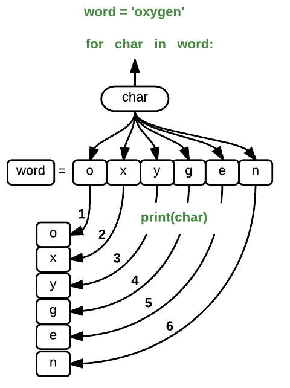

Python Fundamentals
Overview
Teaching: 20 min
Exercises: 10 minQuestions
What basic data types can I work with in Python?
How can I create a new variable in Python?
Can I change the value associated with a variable after I create it?
Objectives
Assign values to variables.
Variables
Any Python interpreter can be used as a calculator:
3 + 5 * 4
23
This is great but not very interesting.
To do anything useful with data, we need to assign its value to a variable.
In Python, we can assign a value to a
variable, using the equals sign =.
For example, to assign value 60 to a variable weight_kg, we would execute:
weight_kg = 60
From now on, whenever we use weight_kg, Python will substitute the value we assigned to
it. In layman’s terms, a variable is a name for a value.
In Python, variable names:
- can include letters, digits, and underscores
- cannot start with a digit
- are case sensitive.
This means that, for example:
weight0is a valid variable name, whereas0weightis notweightandWeightare different variables
Types of data
Python knows various types of data. Three common ones are:
- integer numbers
- floating point numbers, and
- strings.
In the example above, variable weight_kg has an integer value of 60.
To create a variable with a floating point value, we can execute:
weight_kg = 60.0
And to create a string, we add single or double quotes around some text, for example:
weight_kg_text = 'weight in kilograms:'
Using Variables in Python
To display the value of a variable to the screen in Python, we can use the print function:
print(weight_kg)
60.0
We can display multiple things at once using only one print command:
print(weight_kg_text, weight_kg)
weight in kilograms: 60.0
Moreover, we can do arithmetic with variables right inside the print function:
print('weight in pounds:', 2.2 * weight_kg)
weight in pounds: 132.0
The above command, however, did not change the value of weight_kg:
print(weight_kg)
60.0
To change the value of the weight_kg variable, we have to
assign weight_kg a new value using the equals = sign:
weight_kg = 65.0
print('weight in kilograms is now:', weight_kg)
weight in kilograms is now: 65.0
Variables as Sticky Notes
A variable is analogous to a sticky note with a name written on it: assigning a value to a variable is like putting that sticky note on a particular value.
This means that assigning a value to one variable does not change values of other variables. For example, let’s store the subject’s weight in pounds in its own variable:
# There are 2.2 pounds per kilogram weight_lb = 2.2 * weight_kg print(weight_kg_text, weight_kg, 'and in pounds:', weight_lb)weight in kilograms: 65.0 and in pounds: 143.0
Let’s now change
weight_kg:weight_kg = 100.0 print('weight in kilograms is now:', weight_kg, 'and weight in pounds is still:', weight_lb)weight in kilograms is now: 100.0 and weight in pounds is still: 143.0
Since
weight_lbdoesn’t “remember” where its value comes from, it is not updated when we changeweight_kg.


Check Your Understanding
What values do the variables
massandagehave after each statement in the following program? Test your answers by executing the commands.mass = 47.5 age = 122 mass = mass * 2.0 age = age - 20 print(mass, age)Solution
Sorting Out References
What does the following program print out?
first, second = 'Grace', 'Hopper' third, fourth = second, first print(third, fourth)Solution
Key Points
Basic data types in Python include integers, strings, and floating-point numbers.
Use
variable = valueto assign a value to a variable in order to record it in memory.Variables are created on demand whenever a value is assigned to them.
Use
print(something)to display the value ofsomething.
Analyzing Patient Data
Overview
Teaching: 40 min
Exercises: 20 minQuestions
How can I process tabular data files in Python?
Objectives
Explain what a library is and what libraries are used for.
Import a Python library and use the functions it contains.
Read tabular data from a file into a program.
Select individual values and subsections from data.
Perform operations on arrays of data.
Words are useful, but what’s more useful are the sentences and stories we build with them. Similarly, while a lot of powerful, general tools are built into Python, specialized tools built up from these basic units live in libraries that can be called upon when needed.
Loading data into Python
To begin processing inflammation data, we need to load it into Python. We can do that using a library called NumPy, which stands for Numerical Python. In general, you should use this library when you want to do fancy things with lots of numbers, especially if you have matrices or arrays. To tell Python that we’d like to start using NumPy, we need to import it:
import numpy
Importing a library is like getting a piece of lab equipment out of a storage locker and setting it up on the bench. Libraries provide additional functionality to the basic Python package, much like a new piece of equipment adds functionality to a lab space. Just like in the lab, importing too many libraries can sometimes complicate and slow down your programs - so we only import what we need for each program.
Once we’ve imported the library, we can ask the library to read our data file for us:
numpy.loadtxt(fname='inflammation-01.csv', delimiter=',')
array([[ 0., 0., 1., ..., 3., 0., 0.],
[ 0., 1., 2., ..., 1., 0., 1.],
[ 0., 1., 1., ..., 2., 1., 1.],
...,
[ 0., 1., 1., ..., 1., 1., 1.],
[ 0., 0., 0., ..., 0., 2., 0.],
[ 0., 0., 1., ..., 1., 1., 0.]])
The expression numpy.loadtxt(...) is a function call
that asks Python to run the function loadtxt which
belongs to the numpy library. This dotted notation
is used everywhere in Python: the thing that appears before the dot contains the thing that
appears after.
As an example, John Smith is the John that belongs to the Smith family.
We could use the dot notation to write his name smith.john,
just as loadtxt is a function that belongs to the numpy library.
numpy.loadtxt has two parameters: the name of the file
we want to read and the delimiter that separates values on
a line. These both need to be character strings (or strings
for short), so we put them in quotes.
Since we haven’t told it to do anything else with the function’s output,
the notebook displays it.
In this case,
that output is the data we just loaded.
By default,
only a few rows and columns are shown
(with ... to omit elements when displaying big arrays).
Note that, to save space when displaying NumPy arrays, Python does not show us trailing zeros, so 1.0 becomes 1..
Importing libraries with shortcuts
In this lesson we use the
import numpysyntax to import NumPy. However, shortcuts such asimport numpy as npare frequently used. Importing NumPy this way means that after the inital import, rather than writingnumpy.loadtxt(...), you can now writenp.loadtxt(...). Some people prefer this as it is quicker to type and results in shorter lines of code - especially for libraries with long names! You will frequently see Python code online using a NumPy function withnp, and it’s because they’ve used this shortcut. It makes no difference which approach you choose to take, but you must be consistent as if you useimport numpy as npthennumpy.loadtxt(...)will not work, and you must usenp.loadtxt(...)instead. Because of this, when working with other people it is important you agree on how libraries are imported.
Our call to numpy.loadtxt read our file
but didn’t save the data in memory.
To do that,
we need to assign the array to a variable. In a similar manner to how we assign a single
value to a variable, we can also assign an array of values to a variable using the same syntax.
Let’s re-run numpy.loadtxt and save the returned data:
data = numpy.loadtxt(fname='inflammation-01.csv', delimiter=',')
This statement doesn’t produce any output because we’ve assigned the output to the variable data.
If we want to check that the data have been loaded,
we can print the variable’s value:
print(data)
[[ 0. 0. 1. ..., 3. 0. 0.]
[ 0. 1. 2. ..., 1. 0. 1.]
[ 0. 1. 1. ..., 2. 1. 1.]
...,
[ 0. 1. 1. ..., 1. 1. 1.]
[ 0. 0. 0. ..., 0. 2. 0.]
[ 0. 0. 1. ..., 1. 1. 0.]]
Now that the data are in memory,
we can manipulate them.
First,
let’s ask what type of thing data refers to:
print(type(data))
<class 'numpy.ndarray'>
The output tells us that data currently refers to
an N-dimensional array, the functionality for which is provided by the NumPy library.
These data correspond to arthritis patients’ inflammation.
The rows are the individual patients, and the columns
are their daily inflammation measurements.
Data Type
A Numpy array contains one or more elements of the same type. The
typefunction will only tell you that a variable is a NumPy array but won’t tell you the type of thing inside the array. We can find out the type of the data contained in the NumPy array.print(data.dtype)float64This tells us that the NumPy array’s elements are floating-point numbers.
With the following command, we can see the array’s shape:
print(data.shape)
(60, 40)
The output tells us that the data array variable contains 60 rows and 40 columns. When we
created the variable data to store our arthritis data, we did not only create the array; we also
created information about the array, called members or
attributes. This extra information describes data in the same way an adjective describes a noun.
data.shape is an attribute of data which describes the dimensions of data. We use the same
dotted notation for the attributes of variables that we use for the functions in libraries because
they have the same part-and-whole relationship.
If we want to get a single number from the array, we must provide an index in square brackets after the variable name, just as we do in math when referring to an element of a matrix. Our inflammation data has two dimensions, so we will need to use two indices to refer to one specific value:
print('first value in data:', data[0, 0])
first value in data: 0.0
print('middle value in data:', data[30, 20])
middle value in data: 13.0
The expression data[30, 20] accesses the element at row 30, column 20. While this expression may
not surprise you,
data[0, 0] might.
Programming languages like Fortran, MATLAB and R start counting at 1
because that’s what human beings have done for thousands of years.
Languages in the C family (including C++, Java, Perl, and Python) count from 0
because it represents an offset from the first value in the array (the second
value is offset by one index from the first value). This is closer to the way
that computers represent arrays (if you are interested in the historical
reasons behind counting indices from zero, you can read
Mike Hoye’s blog post).
As a result,
if we have an M×N array in Python,
its indices go from 0 to M-1 on the first axis
and 0 to N-1 on the second.
It takes a bit of getting used to,
but one way to remember the rule is that
the index is how many steps we have to take from the start to get the item we want.

In the Corner
What may also surprise you is that when Python displays an array, it shows the element with index
[0, 0]in the upper left corner rather than the lower left. This is consistent with the way mathematicians draw matrices but different from the Cartesian coordinates. The indices are (row, column) instead of (column, row) for the same reason, which can be confusing when plotting data.
Slicing data
An index like [30, 20] selects a single element of an array,
but we can select whole sections as well.
For example,
we can select the first ten days (columns) of values
for the first four patients (rows) like this:
print(data[0:4, 0:10])
[[ 0. 0. 1. 3. 1. 2. 4. 7. 8. 3.]
[ 0. 1. 2. 1. 2. 1. 3. 2. 2. 6.]
[ 0. 1. 1. 3. 3. 2. 6. 2. 5. 9.]
[ 0. 0. 2. 0. 4. 2. 2. 1. 6. 7.]]
The slice 0:4 means, “Start at index 0 and go up to, but not
including, index 4”. Again, the up-to-but-not-including takes a bit of getting used to, but the
rule is that the difference between the upper and lower bounds is the number of values in the slice.
We don’t have to start slices at 0:
print(data[5:10, 0:10])
[[ 0. 0. 1. 2. 2. 4. 2. 1. 6. 4.]
[ 0. 0. 2. 2. 4. 2. 2. 5. 5. 8.]
[ 0. 0. 1. 2. 3. 1. 2. 3. 5. 3.]
[ 0. 0. 0. 3. 1. 5. 6. 5. 5. 8.]
[ 0. 1. 1. 2. 1. 3. 5. 3. 5. 8.]]
We also don’t have to include the upper and lower bound on the slice. If we don’t include the lower bound, Python uses 0 by default; if we don’t include the upper, the slice runs to the end of the axis, and if we don’t include either (i.e., if we use ‘:’ on its own), the slice includes everything:
small = data[:3, 36:]
print('small is:')
print(small)
The above example selects rows 0 through 2 and columns 36 through to the end of the array.
small is:
[[ 2. 3. 0. 0.]
[ 1. 1. 0. 1.]
[ 2. 2. 1. 1.]]
Analyzing data
NumPy has several useful functions that take an array as input to perform operations on its values.
If we want to find the average inflammation for all patients on
all days, for example, we can ask NumPy to compute data’s mean value:
print(numpy.mean(data))
6.14875
mean is a function that takes
an array as an argument.
Not All Functions Have Input
Generally, a function uses inputs to produce outputs. However, some functions produce outputs without needing any input. For example, checking the current time doesn’t require any input.
import time print(time.ctime())Sat Mar 26 13:07:33 2016For functions that don’t take in any arguments, we still need parentheses (
()) to tell Python to go and do something for us.
Let’s use three other NumPy functions to get some descriptive values about the dataset. We’ll also use multiple assignment, a convenient Python feature that will enable us to do this all in one line.
maxval, minval, stdval = numpy.max(data), numpy.min(data), numpy.std(data)
print('maximum inflammation:', maxval)
print('minimum inflammation:', minval)
print('standard deviation:', stdval)
Here we’ve assigned the return value from numpy.max(data) to the variable maxval, the value
from numpy.min(data) to minval, and so on.
maximum inflammation: 20.0
minimum inflammation: 0.0
standard deviation: 4.61383319712
Mystery Functions in IPython
How did we know what functions NumPy has and how to use them? If you are working in IPython or in a Jupyter Notebook, there is an easy way to find out. If you type the name of something followed by a dot, then you can use tab completion (e.g. type
numpy.and then press Tab) to see a list of all functions and attributes that you can use. After selecting one, you can also add a question mark (e.g.numpy.cumprod?), and IPython will return an explanation of the method! This is the same as doinghelp(numpy.cumprod). Similarly, if you are using the “plain vanilla” Python interpreter, you can typenumpy.and press the Tab key twice for a listing of what is available. You can then use thehelp()function to see an explanation of the function you’re interested in, for example:help(numpy.cumprod).
When analyzing data, though, we often want to look at variations in statistical values, such as the maximum inflammation per patient or the average inflammation per day. One way to do this is to create a new temporary array of the data we want, then ask it to do the calculation:
patient_0 = data[0, :] # 0 on the first axis (rows), everything on the second (columns)
print('maximum inflammation for patient 0:', numpy.max(patient_0))
maximum inflammation for patient 0: 18.0
Everything in a line of code following the ‘#’ symbol is a comment that is ignored by Python. Comments allow programmers to leave explanatory notes for other programmers or their future selves.
We don’t actually need to store the row in a variable of its own. Instead, we can combine the selection and the function call:
print('maximum inflammation for patient 2:', numpy.max(data[2, :]))
maximum inflammation for patient 2: 19.0
What if we need the maximum inflammation for each patient over all days (as in the next diagram on the left) or the average for each day (as in the diagram on the right)? As the diagram below shows, we want to perform the operation across an axis:

To support this functionality, most array functions allow us to specify the axis we want to work on. If we ask for the average across axis 0 (rows in our 2D example), we get:
print(numpy.mean(data, axis=0))
[ 0. 0.45 1.11666667 1.75 2.43333333 3.15
3.8 3.88333333 5.23333333 5.51666667 5.95 5.9
8.35 7.73333333 8.36666667 9.5 9.58333333
10.63333333 11.56666667 12.35 13.25 11.96666667
11.03333333 10.16666667 10. 8.66666667 9.15 7.25
7.33333333 6.58333333 6.06666667 5.95 5.11666667 3.6
3.3 3.56666667 2.48333333 1.5 1.13333333
0.56666667]
As a quick check, we can ask this array what its shape is:
print(numpy.mean(data, axis=0).shape)
(40,)
The expression (40,) tells us we have an N×1 vector,
so this is the average inflammation per day for all patients.
If we average across axis 1 (columns in our 2D example), we get:
print(numpy.mean(data, axis=1))
[ 5.45 5.425 6.1 5.9 5.55 6.225 5.975 6.65 6.625 6.525
6.775 5.8 6.225 5.75 5.225 6.3 6.55 5.7 5.85 6.55
5.775 5.825 6.175 6.1 5.8 6.425 6.05 6.025 6.175 6.55
6.175 6.35 6.725 6.125 7.075 5.725 5.925 6.15 6.075 5.75
5.975 5.725 6.3 5.9 6.75 5.925 7.225 6.15 5.95 6.275 5.7
6.1 6.825 5.975 6.725 5.7 6.25 6.4 7.05 5.9 ]
which is the average inflammation per patient across all days.
Slicing Strings
A section of an array is called a slice. We can take slices of character strings as well:
element = 'oxygen' print('first three characters:', element[0:3]) print('last three characters:', element[3:6])first three characters: oxy last three characters: genWhat is the value of
element[:4]? What aboutelement[4:]? Orelement[:]?Solution
What is
element[-1]? What iselement[-2]?Solution
Given those answers, explain what
element[1:-1]does.Solution
How can we rewrite the slice for getting the last three characters of
element, so that it works even if we assign a different string toelement? Test your solution with the following strings:carpentry,clone,hi.Solution
Thin Slices
The expression
element[3:3]produces an empty string, i.e., a string that contains no characters. Ifdataholds our array of patient data, what doesdata[3:3, 4:4]produce? What aboutdata[3:3, :]?Solution
Stacking Arrays
Arrays can be concatenated and stacked on top of one another, using NumPy’s
vstackandhstackfunctions for vertical and horizontal stacking, respectively.import numpy A = numpy.array([[1,2,3], [4,5,6], [7, 8, 9]]) print('A = ') print(A) B = numpy.hstack([A, A]) print('B = ') print(B) C = numpy.vstack([A, A]) print('C = ') print(C)A = [[1 2 3] [4 5 6] [7 8 9]] B = [[1 2 3 1 2 3] [4 5 6 4 5 6] [7 8 9 7 8 9]] C = [[1 2 3] [4 5 6] [7 8 9] [1 2 3] [4 5 6] [7 8 9]]Write some additional code that slices the first and last columns of
A, and stacks them into a 3x2 array. Make sure toSolution
Solution
Change In Inflammation
The patient data is longitudinal in the sense that each row represents a series of observations relating to one individual. This means that the change in inflammation over time is a meaningful concept. Let’s find out how to calculate changes in the data contained in an array with NumPy.
The
numpy.diff()function takes an array and returns the differences between two successive values. Let’s use it to examine the changes each day across the first week of patient 3 from our inflammation dataset.patient3_week1 = data[3, :7] print(patient3_week1)[0. 0. 2. 0. 4. 2. 2.]Calling
numpy.diff(patient3_week1)would do the following calculations[ 0 - 0, 2 - 0, 0 - 2, 4 - 0, 2 - 4, 2 - 2 ]and return the 6 difference values in a new array.
numpy.diff(patient3_week1)array([ 0., 2., -2., 4., -2., 0.])Note that the array of differences is shorter by one element (length 6).
When calling
numpy.diffwith a multi-dimensional array, anaxisargument may be passed to the function to specify which axis to process. When applyingnumpy.diffto our 2D inflammation arraydata, which axis would we specify?Solution
If the shape of an individual data file is
(60, 40)(60 rows and 40 columns), what would the shape of the array be after you run thediff()function and why?Solution
How would you find the largest change in inflammation for each patient? Does it matter if the change in inflammation is an increase or a decrease?
Solution
Key Points
Import a library into a program using
import libraryname.Use the
numpylibrary to work with arrays in Python.The expression
array.shapegives the shape of an array.Use
array[x, y]to select a single element from a 2D array.Array indices start at 0, not 1.
Use
low:highto specify aslicethat includes the indices fromlowtohigh-1.Use
# some kind of explanationto add comments to programs.Use
numpy.mean(array),numpy.max(array), andnumpy.min(array)to calculate simple statistics.Use
numpy.mean(array, axis=0)ornumpy.mean(array, axis=1)to calculate statistics across the specified axis.
Visualizing Tabular Data
Overview
Teaching: 30 min
Exercises: 20 minQuestions
How can I visualize tabular data in Python?
How can I group several plots together?
Objectives
Plot simple graphs from data.
Group several graphs in a single figure.
Visualizing data
The mathematician Richard Hamming once said, “The purpose of computing is insight, not numbers,” and
the best way to develop insight is often to visualize data. Visualization deserves an entire
lecture of its own, but we can explore a few features of Python’s matplotlib library here. While
there is no official plotting library, matplotlib is the de facto standard. First, we will
import the pyplot module from matplotlib and use two of its functions to create and display a
heat map of our data:
import matplotlib.pyplot
image = matplotlib.pyplot.imshow(data)
matplotlib.pyplot.show()

Blue pixels in this heat map represent low values, while yellow pixels represent high values. As we can see, inflammation rises and falls over a 40-day period. Let’s take a look at the average inflammation over time:
ave_inflammation = numpy.mean(data, axis=0)
ave_plot = matplotlib.pyplot.plot(ave_inflammation)
matplotlib.pyplot.show()

Here, we have put the average inflammation per day across all patients in the variable ave_inflammation, then
asked matplotlib.pyplot to create and display a line graph of those values. The result is a
roughly linear rise and fall, which is suspicious: we might instead expect a sharper rise and slower
fall. Let’s have a look at two other statistics:
max_plot = matplotlib.pyplot.plot(numpy.max(data, axis=0))
matplotlib.pyplot.show()

min_plot = matplotlib.pyplot.plot(numpy.min(data, axis=0))
matplotlib.pyplot.show()

The maximum value rises and falls smoothly, while the minimum seems to be a step function. Neither trend seems particularly likely, so either there’s a mistake in our calculations or something is wrong with our data. This insight would have been difficult to reach by examining the numbers themselves without visualization tools.
Grouping plots
You can group similar plots in a single figure using subplots.
This script below uses a number of new commands. The function matplotlib.pyplot.figure()
creates a space into which we will place all of our plots. The parameter figsize
tells Python how big to make this space. Each subplot is placed into the figure using
its add_subplot method. The add_subplot method takes 3
parameters. The first denotes how many total rows of subplots there are, the second parameter
refers to the total number of subplot columns, and the final parameter denotes which subplot
your variable is referencing (left-to-right, top-to-bottom). Each subplot is stored in a
different variable (axes1, axes2, axes3). Once a subplot is created, the axes can
be titled using the set_xlabel() command (or set_ylabel()).
Here are our three plots side by side:
import numpy
import matplotlib.pyplot
data = numpy.loadtxt(fname='inflammation-01.csv', delimiter=',')
fig = matplotlib.pyplot.figure(figsize=(10.0, 3.0))
axes1 = fig.add_subplot(1, 3, 1)
axes2 = fig.add_subplot(1, 3, 2)
axes3 = fig.add_subplot(1, 3, 3)
axes1.set_ylabel('average')
axes1.plot(numpy.mean(data, axis=0))
axes2.set_ylabel('max')
axes2.plot(numpy.max(data, axis=0))
axes3.set_ylabel('min')
axes3.plot(numpy.min(data, axis=0))
fig.tight_layout()
matplotlib.pyplot.savefig('inflammation.png')
matplotlib.pyplot.show()

The call to loadtxt reads our data,
and the rest of the program tells the plotting library
how large we want the figure to be,
that we’re creating three subplots,
what to draw for each one,
and that we want a tight layout.
(If we leave out that call to fig.tight_layout(),
the graphs will actually be squeezed together more closely.)
The call to savefig stores the plot as a graphics file. This can be
a convenient way to store your plots for use in other documents, web
pages etc. The graphics format is automatically determined by
Matplotlib from the file name ending we specify; here PNG from
‘inflammation.png’. Matplotlib supports many different graphics
formats, including SVG, PDF, and JPEG.
Plot Scaling
Why do all of our plots stop just short of the upper end of our graph?
Solution
If we want to change this, we can use the
set_ylim(min, max)method of each ‘axes’, for example:axes3.set_ylim(0,6)Update your plotting code to automatically set a more appropriate scale. (Hint: you can make use of the
maxandminmethods to help.)Solution
Solution
Drawing Straight Lines
In the center and right subplots above, we expect all lines to look like step functions because non-integer value are not realistic for the minimum and maximum values. However, you can see that the lines are not always vertical or horizontal, and in particular the step function in the subplot on the right looks slanted. Why is this?
Solution

Make Your Own Plot
Create a plot showing the standard deviation (
numpy.std) of the inflammation data for each day across all patients.Solution
Moving Plots Around
Modify the program to display the three plots on top of one another instead of side by side.
Solution
Key Points
Use the
pyplotmodule from thematplotliblibrary for creating simple visualizations.
Repeating Actions with Loops
Overview
Teaching: 30 min
Exercises: 0 minQuestions
How can I do the same operations on many different values?
Objectives
Explain what a
forloop does.Correctly write
forloops to repeat simple calculations.Trace changes to a loop variable as the loop runs.
Trace changes to other variables as they are updated by a
forloop.
In the last episode, we wrote Python code that plots values of interest from our first
inflammation dataset (inflammation-01.csv), which revealed some suspicious features in it.

We have a dozen data sets right now, though, and more on the way. We want to create plots for all of our data sets with a single statement. To do that, we’ll have to teach the computer how to repeat things.
An example task that we might want to repeat is printing each character in a word on a line of its own.
word = 'lead'
In Python, a string is basically an ordered collection of characters, and every
character has a unique number associated with it – its index. This means that
we can access characters in a string using their indices.
For example, we can get the first character of the word 'lead', by using
word[0]. One way to print each character is to use four print statements:
print(word[0])
print(word[1])
print(word[2])
print(word[3])
l
e
a
d
This is a bad approach for three reasons:
-
Not scalable. Imagine you need to print characters of a string that is hundreds of letters long. It might be easier to type them in manually.
-
Difficult to maintain. If we want to decorate each printed character with an asterisk or any other character, we would have to change four lines of code. While this might not be a problem for short strings, it would definitely be a problem for longer ones.
-
Fragile. If we use it with a word that has more characters than what we initially envisioned, it will only display part of the word’s characters. A shorter string, on the other hand, will cause an error because it will be trying to display part of the string that doesn’t exist.
word = 'tin'
print(word[0])
print(word[1])
print(word[2])
print(word[3])
t
i
n
---------------------------------------------------------------------------
IndexError Traceback (most recent call last)
<ipython-input-3-7974b6cdaf14> in <module>()
3 print(word[1])
4 print(word[2])
----> 5 print(word[3])
IndexError: string index out of range
Here’s a better approach:
word = 'lead'
for char in word:
print(char)
l
e
a
d
This is shorter — certainly shorter than something that prints every character in a hundred-letter string — and more robust as well:
word = 'oxygen'
for char in word:
print(char)
o
x
y
g
e
n
The improved version uses a for loop to repeat an operation — in this case, printing — once for each thing in a sequence. The general form of a loop is:
for variable in collection:
# do things using variable, such as print
Using the oxygen example above, the loop might look like this:

where each character (char) in the variable word is looped through and printed one character
after another. The numbers in the diagram denote which loop cycle the character was printed in (1
being the first loop, and 6 being the final loop).
We can call the loop variable anything we like, but
there must be a colon at the end of the line starting the loop, and we must indent anything we
want to run inside the loop. Unlike many other languages, there is no command to signify the end
of the loop body (e.g. end for); what is indented after the for statement belongs to the loop.
What’s in a name?
In the example above, the loop variable was given the name
charas a mnemonic; it is short for ‘character’. We can choose any name we want for variables. We can even call our loop variablebanana, as long as we use this name consistently:word = 'oxygen' for banana in word: print(banana)o x y g e nIt is a good idea to choose variable names that are meaningful, otherwise it would be more difficult to understand what the loop is doing.
Here’s another loop that repeatedly updates a variable:
length = 0
for vowel in 'aeiou':
length = length + 1
print('There are', length, 'vowels')
There are 5 vowels
It’s worth tracing the execution of this little program step by step.
Since there are five characters in 'aeiou',
the statement on line 3 will be executed five times.
The first time around,
length is zero (the value assigned to it on line 1)
and vowel is 'a'.
The statement adds 1 to the old value of length,
producing 1,
and updates length to refer to that new value.
The next time around,
vowel is 'e' and length is 1,
so length is updated to be 2.
After three more updates,
length is 5;
since there is nothing left in 'aeiou' for Python to process,
the loop finishes
and the print statement on line 4 tells us our final answer.
Note that a loop variable is a variable that’s being used to record progress in a loop. It still exists after the loop is over, and we can re-use variables previously defined as loop variables as well:
letter = 'z'
for letter in 'abc':
print(letter)
print('after the loop, letter is', letter)
a
b
c
after the loop, letter is c
Note also that finding the length of a string is such a common operation
that Python actually has a built-in function to do it called len:
print(len('aeiou'))
5
len is much faster than any function we could write ourselves,
and much easier to read than a two-line loop;
it will also give us the length of many other things that we haven’t met yet,
so we should always use it when we can.
From 1 to N
Python has a built-in function called
rangethat generates a sequence of numbers.rangecan accept 1, 2, or 3 parameters.
- If one parameter is given,
rangegenerates a sequence of that length, starting at zero and incrementing by 1. For example,range(3)produces the numbers0, 1, 2.- If two parameters are given,
rangestarts at the first and ends just before the second, incrementing by one. For example,range(2, 5)produces2, 3, 4.- If
rangeis given 3 parameters, it starts at the first one, ends just before the second one, and increments by the third one. For example,range(3, 10, 2)produces3, 5, 7, 9.Using
range, write a loop that usesrangeto print the first 3 natural numbers:1 2 3Solution
Understanding the loops
Given the following loop:
word = 'oxygen' for char in word: print(char)How many times is the body of the loop executed?
- 3 times
- 4 times
- 5 times
- 6 times
Solution
Computing Powers With Loops
Exponentiation is built into Python:
print(5 ** 3)125Write a loop that calculates the same result as
5 ** 3using multiplication (and without exponentiation).Solution
Reverse a String
Knowing that two strings can be concatenated using the
+operator, write a loop that takes a string and produces a new string with the characters in reverse order, so'Newton'becomes'notweN'.Solution
Computing the Value of a Polynomial
The built-in function
enumeratetakes a sequence (e.g. a list) and generates a new sequence of the same length. Each element of the new sequence is a pair composed of the index (0, 1, 2,…) and the value from the original sequence:for idx, val in enumerate(a_list): # Do something using idx and valThe code above loops through
a_list, assigning the index toidxand the value toval.Suppose you have encoded a polynomial as a list of coefficients in the following way: the first element is the constant term, the second element is the coefficient of the linear term, the third is the coefficient of the quadratic term, etc.
x = 5 coefs = [2, 4, 3] y = coefs[0] * x**0 + coefs[1] * x**1 + coefs[2] * x**2 print(y)97Write a loop using
enumerate(coefs)which computes the valueyof any polynomial, givenxandcoefs.Solution
Key Points
Use
for variable in sequenceto process the elements of a sequence one at a time.The body of a
forloop must be indented.Use
len(thing)to determine the length of something that contains other values.
Storing Multiple Values in Lists
Overview
Teaching: 30 min
Exercises: 15 minQuestions
How can I store many values together?
Objectives
Explain what a list is.
Create and index lists of simple values.
Change the values of individual elements
Append values to an existing list
Reorder and slice list elements
Create and manipulate nested lists
Similar to a string that can contain many characters, a list is a container that can store many values. Unlike NumPy arrays, lists are built into the language (so we don’t have to load a library to use them). We create a list by putting values inside square brackets and separating the values with commas:
odds = [1, 3, 5, 7]
print('odds are:', odds)
odds are: [1, 3, 5, 7]
We can access elements of a list using indices – numbered positions of elements in the list. These positions are numbered starting at 0, so the first element has an index of 0.
print('first element:', odds[0])
print('last element:', odds[3])
print('"-1" element:', odds[-1])
first element: 1
last element: 7
"-1" element: 7
Yes, we can use negative numbers as indices in Python. When we do so, the index -1 gives us the
last element in the list, -2 the second to last, and so on.
Because of this, odds[3] and odds[-1] point to the same element here.
If we loop over a list, the loop variable is assigned to its elements one at a time:
for number in odds:
print(number)
1
3
5
7
There is one important difference between lists and strings: we can change the values in a list, but we cannot change individual characters in a string. For example:
names = ['Curie', 'Darwing', 'Turing'] # typo in Darwin's name
print('names is originally:', names)
names[1] = 'Darwin' # correct the name
print('final value of names:', names)
names is originally: ['Curie', 'Darwing', 'Turing']
final value of names: ['Curie', 'Darwin', 'Turing']
works, but:
name = 'Darwin'
name[0] = 'd'
---------------------------------------------------------------------------
TypeError Traceback (most recent call last)
<ipython-input-8-220df48aeb2e> in <module>()
1 name = 'Darwin'
----> 2 name[0] = 'd'
TypeError: 'str' object does not support item assignment
does not.
Ch-Ch-Ch-Ch-Changes
Data which can be modified in place is called mutable, while data which cannot be modified is called immutable. Strings and numbers are immutable. This does not mean that variables with string or number values are constants, but when we want to change the value of a string or number variable, we can only replace the old value with a completely new value.
Lists and arrays, on the other hand, are mutable: we can modify them after they have been created. We can change individual elements, append new elements, or reorder the whole list. For some operations, like sorting, we can choose whether to use a function that modifies the data in-place or a function that returns a modified copy and leaves the original unchanged.
Be careful when modifying data in-place. If two variables refer to the same list, and you modify the list value, it will change for both variables!
salsa = ['peppers', 'onions', 'cilantro', 'tomatoes'] my_salsa = salsa # <-- my_salsa and salsa point to the *same* list data in memory salsa[0] = 'hot peppers' print('Ingredients in my salsa:', my_salsa)Ingredients in my salsa: ['hot peppers', 'onions', 'cilantro', 'tomatoes']If you want variables with mutable values to be independent, you must make a copy of the value when you assign it.
salsa = ['peppers', 'onions', 'cilantro', 'tomatoes'] my_salsa = list(salsa) # <-- makes a *copy* of the list salsa[0] = 'hot peppers' print('Ingredients in my salsa:', my_salsa)Ingredients in my salsa: ['peppers', 'onions', 'cilantro', 'tomatoes']Because of pitfalls like this, code which modifies data in place can be more difficult to understand. However, it is often far more efficient to modify a large data structure in place than to create a modified copy for every small change. You should consider both of these aspects when writing your code.
Nested Lists
Since a list can contain any Python variables, it can even contain other lists.
For example, we could represent the products in the shelves of a small grocery shop:
x = [['pepper', 'zucchini', 'onion'], ['cabbage', 'lettuce', 'garlic'], ['apple', 'pear', 'banana']]Here is a visual example of how indexing a list of lists
xworks:
Using the previously declared list
x, these would be the results of the index operations shown in the image:print([x[0]])[['pepper', 'zucchini', 'onion']]print(x[0])['pepper', 'zucchini', 'onion']print(x[0][0])'pepper'Thanks to Hadley Wickham for the image above.
![x is represented as a pepper shaker containing several packets of pepper. [x[0]] is represented
as a pepper shaker containing a single packet of pepper. x[0] is represented as a single packet of
pepper. x[0][0] is represented as single grain of pepper. Adapted
from @hadleywickham.](./aio_files/indexing_lists_python.png)
Heterogeneous Lists
Lists in Python can contain elements of different types. Example:
sample_ages = [10, 12.5, 'Unknown']
There are many ways to change the contents of lists besides assigning new values to individual elements:
odds.append(11)
print('odds after adding a value:', odds)
odds after adding a value: [1, 3, 5, 7, 11]
removed_element = odds.pop(0)
print('odds after removing the first element:', odds)
print('removed_element:', removed_element)
odds after removing the first element: [3, 5, 7, 11]
removed_element: 1
odds.reverse()
print('odds after reversing:', odds)
odds after reversing: [11, 7, 5, 3]
While modifying in place, it is useful to remember that Python treats lists in a slightly counter-intuitive way.
As we saw earlier, when we modified the salsa list item in-place, if we make a list, (attempt to) copy it and then modify this list, we can cause all sorts of trouble. This also applies to modifying the list using the above functions:
odds = [1, 3, 5, 7]
primes = odds
primes.append(2)
print('primes:', primes)
print('odds:', odds)
primes: [1, 3, 5, 7, 2]
odds: [1, 3, 5, 7, 2]
This is because Python stores a list in memory, and then can use multiple names to refer to the
same list. If all we want to do is copy a (simple) list, we can again use the list function, so we do
not modify a list we did not mean to:
odds = [1, 3, 5, 7]
primes = list(odds)
primes.append(2)
print('primes:', primes)
print('odds:', odds)
primes: [1, 3, 5, 7, 2]
odds: [1, 3, 5, 7]
Turn a String Into a List
Use a for-loop to convert the string “hello” into a list of letters:
['h', 'e', 'l', 'l', 'o']Hint: You can create an empty list like this:
my_list = []Solution
Subsets of lists and strings can be accessed by specifying ranges of values in brackets, similar to how we accessed ranges of positions in a NumPy array. This is commonly referred to as “slicing” the list/string.
binomial_name = 'Drosophila melanogaster'
group = binomial_name[0:10]
print('group:', group)
species = binomial_name[11:23]
print('species:', species)
chromosomes = ['X', 'Y', '2', '3', '4']
autosomes = chromosomes[2:5]
print('autosomes:', autosomes)
last = chromosomes[-1]
print('last:', last)
group: Drosophila
species: melanogaster
autosomes: ['2', '3', '4']
last: 4
Slicing From the End
Use slicing to access only the last four characters of a string or entries of a list.
string_for_slicing = 'Observation date: 02-Feb-2013' list_for_slicing = [['fluorine', 'F'], ['chlorine', 'Cl'], ['bromine', 'Br'], ['iodine', 'I'], ['astatine', 'At']]'2013' [['chlorine', 'Cl'], ['bromine', 'Br'], ['iodine', 'I'], ['astatine', 'At']]Would your solution work regardless of whether you knew beforehand the length of the string or list (e.g. if you wanted to apply the solution to a set of lists of different lengths)? If not, try to change your approach to make it more robust.
Hint: Remember that indices can be negative as well as positive
Solution
Non-Continuous Slices
So far we’ve seen how to use slicing to take single blocks of successive entries from a sequence. But what if we want to take a subset of entries that aren’t next to each other in the sequence?
You can achieve this by providing a third argument to the range within the brackets, called the step size. The example below shows how you can take every third entry in a list:
primes = [2, 3, 5, 7, 11, 13, 17, 19, 23, 29, 31, 37] subset = primes[0:12:3] print('subset', subset)subset [2, 7, 17, 29]Notice that the slice taken begins with the first entry in the range, followed by entries taken at equally-spaced intervals (the steps) thereafter. If you wanted to begin the subset with the third entry, you would need to specify that as the starting point of the sliced range:
primes = [2, 3, 5, 7, 11, 13, 17, 19, 23, 29, 31, 37] subset = primes[2:12:3] print('subset', subset)subset [5, 13, 23, 37]Use the step size argument to create a new string that contains only every other character in the string “In an octopus’s garden in the shade”. Start with creating a variable to hold the string:
beatles = "In an octopus's garden in the shade"What slice of
beatleswill produce the following output (i.e., the first character, third character, and every other character through the end of the string)?I notpssgre ntesaeSolution
If you want to take a slice from the beginning of a sequence, you can omit the first index in the range:
date = 'Monday 4 January 2016'
day = date[0:6]
print('Using 0 to begin range:', day)
day = date[:6]
print('Omitting beginning index:', day)
Using 0 to begin range: Monday
Omitting beginning index: Monday
And similarly, you can omit the ending index in the range to take a slice to the very end of the sequence:
months = ['jan', 'feb', 'mar', 'apr', 'may', 'jun', 'jul', 'aug', 'sep', 'oct', 'nov', 'dec']
sond = months[8:12]
print('With known last position:', sond)
sond = months[8:len(months)]
print('Using len() to get last entry:', sond)
sond = months[8:]
print('Omitting ending index:', sond)
With known last position: ['sep', 'oct', 'nov', 'dec']
Using len() to get last entry: ['sep', 'oct', 'nov', 'dec']
Omitting ending index: ['sep', 'oct', 'nov', 'dec']
Overloading
+usually means addition, but when used on strings or lists, it means “concatenate”. Given that, what do you think the multiplication operator*does on lists? In particular, what will be the output of the following code?counts = [2, 4, 6, 8, 10] repeats = counts * 2 print(repeats)
[2, 4, 6, 8, 10, 2, 4, 6, 8, 10][4, 8, 12, 16, 20][[2, 4, 6, 8, 10],[2, 4, 6, 8, 10]][2, 4, 6, 8, 10, 4, 8, 12, 16, 20]The technical term for this is operator overloading: a single operator, like
+or*, can do different things depending on what it’s applied to.Solution
Key Points
[value1, value2, value3, ...]creates a list.Lists can contain any Python object, including lists (i.e., list of lists).
Lists are indexed and sliced with square brackets (e.g., list[0] and list[2:9]), in the same way as strings and arrays.
Lists are mutable (i.e., their values can be changed in place).
Strings are immutable (i.e., the characters in them cannot be changed).
Analyzing Data from Multiple Files
Overview
Teaching: 20 min
Exercises: 0 minQuestions
How can I do the same operations on many different files?
Objectives
Use a library function to get a list of filenames that match a wildcard pattern.
Write a
forloop to process multiple files.
We now have almost everything we need to process all our data files. The only thing that’s missing is a library with a rather unpleasant name:
import glob
The glob library contains a function, also called glob,
that finds files and directories whose names match a pattern.
We provide those patterns as strings:
the character * matches zero or more characters,
while ? matches any one character.
We can use this to get the names of all the CSV files in the current directory:
print(glob.glob('inflammation*.csv'))
['inflammation-05.csv', 'inflammation-11.csv', 'inflammation-12.csv', 'inflammation-08.csv',
'inflammation-03.csv', 'inflammation-06.csv', 'inflammation-09.csv', 'inflammation-07.csv',
'inflammation-10.csv', 'inflammation-02.csv', 'inflammation-04.csv', 'inflammation-01.csv']
As these examples show,
glob.glob’s result is a list of file and directory paths in arbitrary order.
This means we can loop over it
to do something with each filename in turn.
In our case,
the “something” we want to do is generate a set of plots for each file in our inflammation dataset.
If we want to start by analyzing just the first three files in alphabetical order, we can use the
sorted built-in function to generate a new sorted list from the glob.glob output:
import glob
import numpy
import matplotlib.pyplot
filenames = sorted(glob.glob('inflammation*.csv'))
filenames = filenames[0:3]
for filename in filenames:
print(filename)
data = numpy.loadtxt(fname=filename, delimiter=',')
fig = matplotlib.pyplot.figure(figsize=(10.0, 3.0))
axes1 = fig.add_subplot(1, 3, 1)
axes2 = fig.add_subplot(1, 3, 2)
axes3 = fig.add_subplot(1, 3, 3)
axes1.set_ylabel('average')
axes1.plot(numpy.mean(data, axis=0))
axes2.set_ylabel('max')
axes2.plot(numpy.max(data, axis=0))
axes3.set_ylabel('min')
axes3.plot(numpy.min(data, axis=0))
fig.tight_layout()
matplotlib.pyplot.show()
inflammation-01.csv

inflammation-02.csv

inflammation-03.csv

Sure enough, the maxima of the first two data sets show exactly the same ramp as the first, and their minima show the same staircase structure; a different situation has been revealed in the third dataset, where the maxima are a bit less regular, but the minima are consistently zero.
Plotting Differences
Plot the difference between the average inflammations reported in the first and second datasets (stored in
inflammation-01.csvandinflammation-02.csv, correspondingly), i.e., the difference between the leftmost plots of the first two figures.Solution
Generate Composite Statistics
Use each of the files once to generate a dataset containing values averaged over all patients:
filenames = glob.glob('inflammation*.csv') composite_data = numpy.zeros((60,40)) for filename in filenames: # sum each new file's data into composite_data as it's read # # and then divide the composite_data by number of samples composite_data = composite_data / len(filenames)Then use pyplot to generate average, max, and min for all patients.
Solution
Key Points
Use
glob.glob(pattern)to create a list of files whose names match a pattern.Use
*in a pattern to match zero or more characters, and?to match any single character.
Making Choices
Overview
Teaching: 30 min
Exercises: 0 minQuestions
How can my programs do different things based on data values?
Objectives
Write conditional statements including
if,elif, andelsebranches.Correctly evaluate expressions containing
andandor.
In our last lesson, we discovered something suspicious was going on in our inflammation data by drawing some plots. How can we use Python to automatically recognize the different features we saw, and take a different action for each? In this lesson, we’ll learn how to write code that runs only when certain conditions are true.
Conditionals
We can ask Python to take different actions, depending on a condition, with an if statement:
num = 37
if num > 100:
print('greater')
else:
print('not greater')
print('done')
not greater
done
The second line of this code uses the keyword if to tell Python that we want to make a choice.
If the test that follows the if statement is true,
the body of the if
(i.e., the set of lines indented underneath it) is executed, and “greater” is printed.
If the test is false,
the body of the else is executed instead, and “not greater” is printed.
Only one or the other is ever executed before continuing on with program execution to print “done”:

Conditional statements don’t have to include an else.
If there isn’t one,
Python simply does nothing if the test is false:
num = 53
print('before conditional...')
if num > 100:
print(num,' is greater than 100')
print('...after conditional')
before conditional...
...after conditional
We can also chain several tests together using elif,
which is short for “else if”.
The following Python code uses elif to print the sign of a number.
num = -3
if num > 0:
print(num, 'is positive')
elif num == 0:
print(num, 'is zero')
else:
print(num, 'is negative')
-3 is negative
Note that to test for equality we use a double equals sign ==
rather than a single equals sign = which is used to assign values.
We can also combine tests using and and or.
and is only true if both parts are true:
if (1 > 0) and (-1 > 0):
print('both parts are true')
else:
print('at least one part is false')
at least one part is false
while or is true if at least one part is true:
if (1 < 0) or (-1 < 0):
print('at least one test is true')
at least one test is true
TrueandFalse
TrueandFalseare special words in Python calledbooleans, which represent truth values. A statement such as1 < 0returns the valueFalse, while-1 < 0returns the valueTrue.
Checking our Data
Now that we’ve seen how conditionals work,
we can use them to check for the suspicious features we saw in our inflammation data.
We are about to use functions provided by the numpy module again.
Therefore, if you’re working in a new Python session, make sure to load the
module with:
import numpy
From the first couple of plots, we saw that maximum daily inflammation exhibits a strange behavior and raises one unit a day. Wouldn’t it be a good idea to detect such behavior and report it as suspicious? Let’s do that! However, instead of checking every single day of the study, let’s merely check if maximum inflammation in the beginning (day 0) and in the middle (day 20) of the study are equal to the corresponding day numbers.
max_inflammation_0 = numpy.max(data, axis=0)[0]
max_inflammation_20 = numpy.max(data, axis=0)[20]
if max_inflammation_0 == 0 and max_inflammation_20 == 20:
print('Suspicious looking maxima!')
We also saw a different problem in the third dataset;
the minima per day were all zero (looks like a healthy person snuck into our study).
We can also check for this with an elif condition:
elif numpy.sum(numpy.min(data, axis=0)) == 0:
print('Minima add up to zero!')
And if neither of these conditions are true, we can use else to give the all-clear:
else:
print('Seems OK!')
Let’s test that out:
data = numpy.loadtxt(fname='inflammation-01.csv', delimiter=',')
max_inflammation_0 = numpy.max(data, axis=0)[0]
max_inflammation_20 = numpy.max(data, axis=0)[20]
if max_inflammation_0 == 0 and max_inflammation_20 == 20:
print('Suspicious looking maxima!')
elif numpy.sum(numpy.min(data, axis=0)) == 0:
print('Minima add up to zero!')
else:
print('Seems OK!')
Suspicious looking maxima!
data = numpy.loadtxt(fname='inflammation-03.csv', delimiter=',')
max_inflammation_0 = numpy.max(data, axis=0)[0]
max_inflammation_20 = numpy.max(data, axis=0)[20]
if max_inflammation_0 == 0 and max_inflammation_20 == 20:
print('Suspicious looking maxima!')
elif numpy.sum(numpy.min(data, axis=0)) == 0:
print('Minima add up to zero!')
else:
print('Seems OK!')
Minima add up to zero!
In this way,
we have asked Python to do something different depending on the condition of our data.
Here we printed messages in all cases,
but we could also imagine not using the else catch-all
so that messages are only printed when something is wrong,
freeing us from having to manually examine every plot for features we’ve seen before.
How Many Paths?
Consider this code:
if 4 > 5: print('A') elif 4 == 5: print('B') elif 4 < 5: print('C')Which of the following would be printed if you were to run this code? Why did you pick this answer?
- A
- B
- C
- B and C
Solution
What Is Truth?
TrueandFalsebooleans are not the only values in Python that are true and false. In fact, any value can be used in aniforelif. After reading and running the code below, explain what the rule is for which values are considered true and which are considered false.if '': print('empty string is true') if 'word': print('word is true') if []: print('empty list is true') if [1, 2, 3]: print('non-empty list is true') if 0: print('zero is true') if 1: print('one is true')
That’s Not Not What I Meant
Sometimes it is useful to check whether some condition is not true. The Boolean operator
notcan do this explicitly. After reading and running the code below, write someifstatements that usenotto test the rule that you formulated in the previous challenge.if not '': print('empty string is not true') if not 'word': print('word is not true') if not not True: print('not not True is true')
Close Enough
Write some conditions that print
Trueif the variableais within 10% of the variablebandFalseotherwise. Compare your implementation with your partner’s: do you get the same answer for all possible pairs of numbers?Hint
Solution 1
Solution 2
In-Place Operators
Python (and most other languages in the C family) provides in-place operators that work like this:
x = 1 # original value x += 1 # add one to x, assigning result back to x x *= 3 # multiply x by 3 print(x)6Write some code that sums the positive and negative numbers in a list separately, using in-place operators. Do you think the result is more or less readable than writing the same without in-place operators?
Solution
Sorting a List Into Buckets
In our
datafolder, large data sets are stored in files whose names start with “inflammation-“ and small data sets – in files whose names start with “small-“. We also have some other files that we do not care about at this point. We’d like to break all these files into three lists calledlarge_files,small_files, andother_files, respectively.Add code to the template below to do this. Note that the string method
startswithreturnsTrueif and only if the string it is called on starts with the string passed as an argument, that is:'String'.startswith('Str')TrueBut
'String'.startswith('str')FalseUse the following Python code as your starting point:
filenames = ['inflammation-01.csv', 'myscript.py', 'inflammation-02.csv', 'small-01.csv', 'small-02.csv'] large_files = [] small_files = [] other_files = []Your solution should:
- loop over the names of the files
- figure out which group each filename belongs in
- append the filename to that list
In the end the three lists should be:
large_files = ['inflammation-01.csv', 'inflammation-02.csv'] small_files = ['small-01.csv', 'small-02.csv'] other_files = ['myscript.py']Solution
Counting Vowels
- Write a loop that counts the number of vowels in a character string.
- Test it on a few individual words and full sentences.
- Once you are done, compare your solution to your neighbor’s. Did you make the same decisions about how to handle the letter ‘y’ (which some people think is a vowel, and some do not)?
Solution
Key Points
Use
if conditionto start a conditional statement,elif conditionto provide additional tests, andelseto provide a default.The bodies of the branches of conditional statements must be indented.
Use
==to test for equality.
X and Yis only true if bothXandYare true.
X or Yis true if eitherXorY, or both, are true.Zero, the empty string, and the empty list are considered false; all other numbers, strings, and lists are considered true.
TrueandFalserepresent truth values.
Creating Functions
Overview
Teaching: 30 min
Exercises: 0 minQuestions
How can I define new functions?
What’s the difference between defining and calling a function?
What happens when I call a function?
Objectives
Define a function that takes parameters.
Return a value from a function.
Test and debug a function.
Set default values for function parameters.
Explain why we should divide programs into small, single-purpose functions.
At this point,
we’ve written code to draw some interesting features in our inflammation data,
loop over all our data files to quickly draw these plots for each of them,
and have Python make decisions based on what it sees in our data.
But, our code is getting pretty long and complicated;
what if we had thousands of datasets,
and didn’t want to generate a figure for every single one?
Commenting out the figure-drawing code is a nuisance.
Also, what if we want to use that code again,
on a different dataset or at a different point in our program?
Cutting and pasting it is going to make our code get very long and very repetitive,
very quickly.
We’d like a way to package our code so that it is easier to reuse,
and Python provides for this by letting us define things called ‘functions’ —
a shorthand way of re-executing longer pieces of code.
Let’s start by defining a function fahr_to_celsius that converts temperatures
from Fahrenheit to Celsius:
def fahr_to_celsius(temp):
return ((temp - 32) * (5/9))

The function definition opens with the keyword def followed by the
name of the function (fahr_to_celsius) and a parenthesized list of parameter names (temp). The
body of the function — the
statements that are executed when it runs — is indented below the
definition line. The body concludes with a return keyword followed by the return value.
When we call the function, the values we pass to it are assigned to those variables so that we can use them inside the function. Inside the function, we use a return statement to send a result back to whoever asked for it.
Let’s try running our function.
fahr_to_celsius(32)
This command should call our function, using “32” as the input and return the function value.
In fact, calling our own function is no different from calling any other function:
print('freezing point of water:', fahr_to_celsius(32), 'C')
print('boiling point of water:', fahr_to_celsius(212), 'C')
freezing point of water: 0.0 C
boiling point of water: 100.0 C
We’ve successfully called the function that we defined, and we have access to the value that we returned.
Composing Functions
Now that we’ve seen how to turn Fahrenheit into Celsius, we can also write the function to turn Celsius into Kelvin:
def celsius_to_kelvin(temp_c):
return temp_c + 273.15
print('freezing point of water in Kelvin:', celsius_to_kelvin(0.))
freezing point of water in Kelvin: 273.15
What about converting Fahrenheit to Kelvin? We could write out the formula, but we don’t need to. Instead, we can compose the two functions we have already created:
def fahr_to_kelvin(temp_f):
temp_c = fahr_to_celsius(temp_f)
temp_k = celsius_to_kelvin(temp_c)
return temp_k
print('boiling point of water in Kelvin:', fahr_to_kelvin(212.0))
boiling point of water in Kelvin: 373.15
This is our first taste of how larger programs are built: we define basic operations, then combine them in ever-larger chunks to get the effect we want. Real-life functions will usually be larger than the ones shown here — typically half a dozen to a few dozen lines — but they shouldn’t ever be much longer than that, or the next person who reads it won’t be able to understand what’s going on.
Tidying up
Now that we know how to wrap bits of code up in functions,
we can make our inflammation analysis easier to read and easier to reuse.
First, let’s make a visualize function that generates our plots:
def visualize(filename):
data = numpy.loadtxt(fname=filename, delimiter=',')
fig = matplotlib.pyplot.figure(figsize=(10.0, 3.0))
axes1 = fig.add_subplot(1, 3, 1)
axes2 = fig.add_subplot(1, 3, 2)
axes3 = fig.add_subplot(1, 3, 3)
axes1.set_ylabel('average')
axes1.plot(numpy.mean(data, axis=0))
axes2.set_ylabel('max')
axes2.plot(numpy.max(data, axis=0))
axes3.set_ylabel('min')
axes3.plot(numpy.min(data, axis=0))
fig.tight_layout()
matplotlib.pyplot.show()
and another function called detect_problems that checks for those systematics
we noticed:
def detect_problems(filename):
data = numpy.loadtxt(fname=filename, delimiter=',')
if numpy.max(data, axis=0)[0] == 0 and numpy.max(data, axis=0)[20] == 20:
print('Suspicious looking maxima!')
elif numpy.sum(numpy.min(data, axis=0)) == 0:
print('Minima add up to zero!')
else:
print('Seems OK!')
Wait! Didn’t we forget to specify what both of these functions should return? Well, we didn’t.
In Python, functions are not required to include a return statement and can be used for
the sole purpose of grouping together pieces of code that conceptually do one thing. In such cases,
function names usually describe what they do, e.g. visualize, detect_problems.
Notice that rather than jumbling this code together in one giant for loop,
we can now read and reuse both ideas separately.
We can reproduce the previous analysis with a much simpler for loop:
filenames = sorted(glob.glob('inflammation*.csv'))
for filename in filenames[:3]:
print(filename)
visualize(filename)
detect_problems(filename)
By giving our functions human-readable names,
we can more easily read and understand what is happening in the for loop.
Even better, if at some later date we want to use either of those pieces of code again,
we can do so in a single line.
Testing and Documenting
Once we start putting things in functions so that we can re-use them, we need to start testing that those functions are working correctly. To see how to do this, let’s write a function to offset a dataset so that it’s mean value shifts to a user-defined value:
def offset_mean(data, target_mean_value):
return (data - numpy.mean(data)) + target_mean_value
We could test this on our actual data, but since we don’t know what the values ought to be, it will be hard to tell if the result was correct. Instead, let’s use NumPy to create a matrix of 0’s and then offset its values to have a mean value of 3:
z = numpy.zeros((2,2))
print(offset_mean(z, 3))
[[ 3. 3.]
[ 3. 3.]]
That looks right,
so let’s try offset_mean on our real data:
data = numpy.loadtxt(fname='inflammation-01.csv', delimiter=',')
print(offset_mean(data, 0))
[[-6.14875 -6.14875 -5.14875 ... -3.14875 -6.14875 -6.14875]
[-6.14875 -5.14875 -4.14875 ... -5.14875 -6.14875 -5.14875]
[-6.14875 -5.14875 -5.14875 ... -4.14875 -5.14875 -5.14875]
...
[-6.14875 -5.14875 -5.14875 ... -5.14875 -5.14875 -5.14875]
[-6.14875 -6.14875 -6.14875 ... -6.14875 -4.14875 -6.14875]
[-6.14875 -6.14875 -5.14875 ... -5.14875 -5.14875 -6.14875]]
It’s hard to tell from the default output whether the result is correct, but there are a few tests that we can run to reassure us:
print('original min, mean, and max are:', numpy.min(data), numpy.mean(data), numpy.max(data))
offset_data = offset_mean(data, 0)
print('min, mean, and max of offset data are:',
numpy.min(offset_data),
numpy.mean(offset_data),
numpy.max(offset_data))
original min, mean, and max are: 0.0 6.14875 20.0
min, mean, and and max of offset data are: -6.14875 2.84217094304e-16 13.85125
That seems almost right: the original mean was about 6.1, so the lower bound from zero is now about -6.1. The mean of the offset data isn’t quite zero — we’ll explore why not in the challenges — but it’s pretty close. We can even go further and check that the standard deviation hasn’t changed:
print('std dev before and after:', numpy.std(data), numpy.std(offset_data))
std dev before and after: 4.61383319712 4.61383319712
Those values look the same, but we probably wouldn’t notice if they were different in the sixth decimal place. Let’s do this instead:
print('difference in standard deviations before and after:',
numpy.std(data) - numpy.std(offset_data))
difference in standard deviations before and after: -3.5527136788e-15
Again, the difference is very small. It’s still possible that our function is wrong, but it seems unlikely enough that we should probably get back to doing our analysis. We have one more task first, though: we should write some documentation for our function to remind ourselves later what it’s for and how to use it.
The usual way to put documentation in software is to add comments like this:
# offset_mean(data, target_mean_value):
# return a new array containing the original data with its mean offset to match the desired value.
def offset_mean(data, target_mean_value):
return (data - numpy.mean(data)) + target_mean_value
There’s a better way, though. If the first thing in a function is a string that isn’t assigned to a variable, that string is attached to the function as its documentation:
def offset_mean(data, target_mean_value):
"""Return a new array containing the original data
with its mean offset to match the desired value."""
return (data - numpy.mean(data)) + target_mean_value
This is better because we can now ask Python’s built-in help system to show us the documentation for the function:
help(offset_mean)
Help on function offset_mean in module __main__:
offset_mean(data, target_mean_value)
Return a new array containing the original data with its mean offset to match the desired value.
A string like this is called a docstring. We don’t need to use triple quotes when we write one, but if we do, we can break the string across multiple lines:
def offset_mean(data, target_mean_value):
"""Return a new array containing the original data
with its mean offset to match the desired value.
Examples
--------
>>> offset_mean([1, 2, 3], 0)
array([-1., 0., 1.])
"""
return (data - numpy.mean(data)) + target_mean_value
help(offset_mean)
Help on function offset_mean in module __main__:
offset_mean(data, target_mean_value)
Return a new array containing the original data
with its mean offset to match the desired value.
Examples
--------
>>> offset_mean([1, 2, 3], 0)
array([-1., 0., 1.])
Defining Defaults
We have passed parameters to functions in two ways:
directly, as in type(data),
and by name, as in numpy.loadtxt(fname='something.csv', delimiter=',').
In fact,
we can pass the filename to loadtxt without the fname=:
numpy.loadtxt('inflammation-01.csv', delimiter=',')
array([[ 0., 0., 1., ..., 3., 0., 0.],
[ 0., 1., 2., ..., 1., 0., 1.],
[ 0., 1., 1., ..., 2., 1., 1.],
...,
[ 0., 1., 1., ..., 1., 1., 1.],
[ 0., 0., 0., ..., 0., 2., 0.],
[ 0., 0., 1., ..., 1., 1., 0.]])
but we still need to say delimiter=:
numpy.loadtxt('inflammation-01.csv', ',')
Traceback (most recent call last):
File "<stdin>", line 1, in <module>
File "/Users/username/anaconda3/lib/python3.6/site-packages/numpy/lib/npyio.py", line 1041, in loa
dtxt
dtype = np.dtype(dtype)
File "/Users/username/anaconda3/lib/python3.6/site-packages/numpy/core/_internal.py", line 199, in
_commastring
newitem = (dtype, eval(repeats))
File "<string>", line 1
,
^
SyntaxError: unexpected EOF while parsing
To understand what’s going on,
and make our own functions easier to use,
let’s re-define our offset_mean function like this:
def offset_mean(data, target_mean_value=0.0):
"""Return a new array containing the original data
with its mean offset to match the desired value, (0 by default).
Examples
--------
>>> offset_mean([1, 2, 3])
array([-1., 0., 1.])
"""
return (data - numpy.mean(data)) + target_mean_value
The key change is that the second parameter is now written target_mean_value=0.0
instead of just target_mean_value.
If we call the function with two arguments,
it works as it did before:
test_data = numpy.zeros((2, 2))
print(offset_mean(test_data, 3))
[[ 3. 3.]
[ 3. 3.]]
But we can also now call it with just one parameter,
in which case target_mean_value is automatically assigned
the default value of 0.0:
more_data = 5 + numpy.zeros((2, 2))
print('data before mean offset:')
print(more_data)
print('offset data:')
print(offset_mean(more_data))
data before mean offset:
[[ 5. 5.]
[ 5. 5.]]
offset data:
[[ 0. 0.]
[ 0. 0.]]
This is handy: if we usually want a function to work one way, but occasionally need it to do something else, we can allow people to pass a parameter when they need to but provide a default to make the normal case easier. The example below shows how Python matches values to parameters:
def display(a=1, b=2, c=3):
print('a:', a, 'b:', b, 'c:', c)
print('no parameters:')
display()
print('one parameter:')
display(55)
print('two parameters:')
display(55, 66)
no parameters:
a: 1 b: 2 c: 3
one parameter:
a: 55 b: 2 c: 3
two parameters:
a: 55 b: 66 c: 3
As this example shows, parameters are matched up from left to right, and any that haven’t been given a value explicitly get their default value. We can override this behavior by naming the value as we pass it in:
print('only setting the value of c')
display(c=77)
only setting the value of c
a: 1 b: 2 c: 77
With that in hand,
let’s look at the help for numpy.loadtxt:
help(numpy.loadtxt)
Help on function loadtxt in module numpy.lib.npyio:
loadtxt(fname, dtype=<class 'float'>, comments='#', delimiter=None, converters=None, skiprows=0, use
cols=None, unpack=False, ndmin=0, encoding='bytes')
Load data from a text file.
Each row in the text file must have the same number of values.
Parameters
----------
...
There’s a lot of information here, but the most important part is the first couple of lines:
loadtxt(fname, dtype=<class 'float'>, comments='#', delimiter=None, converters=None, skiprows=0, use
cols=None, unpack=False, ndmin=0, encoding='bytes')
This tells us that loadtxt has one parameter called fname that doesn’t have a default value,
and eight others that do.
If we call the function like this:
numpy.loadtxt('inflammation-01.csv', ',')
then the filename is assigned to fname (which is what we want),
but the delimiter string ',' is assigned to dtype rather than delimiter,
because dtype is the second parameter in the list. However ',' isn’t a known dtype so
our code produced an error message when we tried to run it.
When we call loadtxt we don’t have to provide fname= for the filename because it’s the
first item in the list, but if we want the ',' to be assigned to the variable delimiter,
we do have to provide delimiter= for the second parameter since delimiter is not
the second parameter in the list.
Readable functions
Consider these two functions:
def s(p):
a = 0
for v in p:
a += v
m = a / len(p)
d = 0
for v in p:
d += (v - m) * (v - m)
return numpy.sqrt(d / (len(p) - 1))
def std_dev(sample):
sample_sum = 0
for value in sample:
sample_sum += value
sample_mean = sample_sum / len(sample)
sum_squared_devs = 0
for value in sample:
sum_squared_devs += (value - sample_mean) * (value - sample_mean)
return numpy.sqrt(sum_squared_devs / (len(sample) - 1))
The functions s and std_dev are computationally equivalent (they
both calculate the sample standard deviation), but to a human reader,
they look very different. You probably found std_dev much easier to
read and understand than s.
As this example illustrates, both documentation and a programmer’s coding style combine to determine how easy it is for others to read and understand the programmer’s code. Choosing meaningful variable names and using blank spaces to break the code into logical “chunks” are helpful techniques for producing readable code. This is useful not only for sharing code with others, but also for the original programmer. If you need to revisit code that you wrote months ago and haven’t thought about since then, you will appreciate the value of readable code!
Combining Strings
“Adding” two strings produces their concatenation:
'a' + 'b'is'ab'. Write a function calledfencethat takes two parameters calledoriginalandwrapperand returns a new string that has the wrapper character at the beginning and end of the original. A call to your function should look like this:print(fence('name', '*'))*name*Solution
Return versus print
Note that
returnandreturnstatement, on the other hand, makes data visible to the program. Let’s have a look at the following function:def add(a, b): print(a + b)Question: What will we see if we execute the following commands?
A = add(7, 3) print(A)Solution
Selecting Characters From Strings
If the variable
srefers to a string, thens[0]is the string’s first character ands[-1]is its last. Write a function calledouterthat returns a string made up of just the first and last characters of its input. A call to your function should look like this:print(outer('helium'))hmSolution
Rescaling an Array
Write a function
rescalethat takes an array as input and returns a corresponding array of values scaled to lie in the range 0.0 to 1.0. (Hint: IfLandHare the lowest and highest values in the original array, then the replacement for a valuevshould be(v-L) / (H-L).)Solution
Testing and Documenting Your Function
Run the commands
help(numpy.arange)andhelp(numpy.linspace)to see how to use these functions to generate regularly-spaced values, then use those values to test yourrescalefunction. Once you’ve successfully tested your function, add a docstring that explains what it does.Solution
Defining Defaults
Rewrite the
rescalefunction so that it scales data to lie between0.0and1.0by default, but will allow the caller to specify lower and upper bounds if they want. Compare your implementation to your neighbor’s: do the two functions always behave the same way?Solution
Variables Inside and Outside Functions
What does the following piece of code display when run — and why?
f = 0 k = 0 def f2k(f): k = ((f-32)*(5.0/9.0)) + 273.15 return k f2k(8) f2k(41) f2k(32) print(k)Solution
Mixing Default and Non-Default Parameters
Given the following code:
def numbers(one, two=2, three, four=4): n = str(one) + str(two) + str(three) + str(four) return n print(numbers(1, three=3))what do you expect will be printed? What is actually printed? What rule do you think Python is following?
1234one2three41239SyntaxErrorGiven that, what does the following piece of code display when run?
def func(a, b=3, c=6): print('a: ', a, 'b: ', b, 'c:', c) func(-1, 2)
a: b: 3 c: 6a: -1 b: 3 c: 6a: -1 b: 2 c: 6a: b: -1 c: 2Solution
The Old Switcheroo
Consider this code:
a = 3 b = 7 def swap(a, b): temp = a a = b b = temp swap(a, b) print(a, b)Which of the following would be printed if you were to run this code? Why did you pick this answer?
7 33 73 37 7Solution
Readable Code
Revise a function you wrote for one of the previous exercises to try to make the code more readable. Then, collaborate with one of your neighbors to critique each other’s functions and discuss how your function implementations could be further improved to make them more readable.
Key Points
Define a function using
def function_name(parameter).The body of a function must be indented.
Call a function using
function_name(value).Numbers are stored as integers or floating-point numbers.
Variables defined within a function can only be seen and used within the body of the function.
If a variable is not defined within the function it is used, Python looks for a definition before the function call
Use
help(thing)to view help for something.Put docstrings in functions to provide help for that function.
Specify default values for parameters when defining a function using
name=valuein the parameter list.Parameters can be passed by matching based on name, by position, or by omitting them (in which case the default value is used).
Put code whose parameters change frequently in a function, then call it with different parameter values to customize its behavior.
Errors and Exceptions
Overview
Teaching: 30 min
Exercises: 0 minQuestions
How does Python report errors?
How can I handle errors in Python programs?
Objectives
To be able to read a traceback, and determine where the error took place and what type it is.
To be able to describe the types of situations in which syntax errors, indentation errors, name errors, index errors, and missing file errors occur.
Every programmer encounters errors, both those who are just beginning, and those who have been programming for years. Encountering errors and exceptions can be very frustrating at times, and can make coding feel like a hopeless endeavour. However, understanding what the different types of errors are and when you are likely to encounter them can help a lot. Once you know why you get certain types of errors, they become much easier to fix.
Errors in Python have a very specific form, called a traceback. Let’s examine one:
# This code has an intentional error. You can type it directly or
# use it for reference to understand the error message below.
def favorite_ice_cream():
ice_creams = [
'chocolate',
'vanilla',
'strawberry'
]
print(ice_creams[3])
favorite_ice_cream()
---------------------------------------------------------------------------
IndexError Traceback (most recent call last)
<ipython-input-1-70bd89baa4df> in <module>()
6 print(ice_creams[3])
7
----> 8 favorite_ice_cream()
<ipython-input-1-70bd89baa4df> in favorite_ice_cream()
4 'vanilla', 'strawberry'
5 ]
----> 6 print(ice_creams[3])
7
8 favorite_ice_cream()
IndexError: list index out of range
This particular traceback has two levels. You can determine the number of levels by looking for the number of arrows on the left hand side. In this case:
-
The first shows code from the cell above, with an arrow pointing to Line 8 (which is
favorite_ice_cream()). -
The second shows some code in the function
favorite_ice_cream, with an arrow pointing to Line 6 (which isprint(ice_creams[3])).
The last level is the actual place where the error occurred.
The other level(s) show what function the program executed to get to the next level down.
So, in this case, the program first performed a
function call to the function favorite_ice_cream.
Inside this function,
the program encountered an error on Line 6, when it tried to run the code print(ice_creams[3]).
Long Tracebacks
Sometimes, you might see a traceback that is very long – sometimes they might even be 20 levels deep! This can make it seem like something horrible happened, but the length of the error message does not reflect severity, rather, it indicates that your program called many functions before it encountered the error. Most of the time, the actual place where the error occurred is at the bottom-most level, so you can skip down the traceback to the bottom.
So what error did the program actually encounter?
In the last line of the traceback,
Python helpfully tells us the category or type of error (in this case, it is an IndexError)
and a more detailed error message (in this case, it says “list index out of range”).
If you encounter an error and don’t know what it means, it is still important to read the traceback closely. That way, if you fix the error, but encounter a new one, you can tell that the error changed. Additionally, sometimes knowing where the error occurred is enough to fix it, even if you don’t entirely understand the message.
If you do encounter an error you don’t recognize, try looking at the official documentation on errors. However, note that you may not always be able to find the error there, as it is possible to create custom errors. In that case, hopefully the custom error message is informative enough to help you figure out what went wrong.
Syntax Errors
When you forget a colon at the end of a line,
accidentally add one space too many when indenting under an if statement,
or forget a parenthesis,
you will encounter a syntax error.
This means that Python couldn’t figure out how to read your program.
This is similar to forgetting punctuation in English:
for example,
this text is difficult to read there is no punctuation there is also no capitalization
why is this hard because you have to figure out where each sentence ends
you also have to figure out where each sentence begins
to some extent it might be ambiguous if there should be a sentence break or not
People can typically figure out what is meant by text with no punctuation, but people are much smarter than computers. If Python doesn’t know how to read the program, it will give up and inform you with an error. For example:
def some_function()
msg = 'hello, world!'
print(msg)
return msg
File "<ipython-input-3-6bb841ea1423>", line 1
def some_function()
^
SyntaxError: invalid syntax
Here, Python tells us that there is a SyntaxError on line 1,
and even puts a little arrow in the place where there is an issue.
In this case the problem is that the function definition is missing a colon at the end.
Actually, the function above has two issues with syntax.
If we fix the problem with the colon,
we see that there is also an IndentationError,
which means that the lines in the function definition do not all have the same indentation:
def some_function():
msg = 'hello, world!'
print(msg)
return msg
File "<ipython-input-4-ae290e7659cb>", line 4
return msg
^
IndentationError: unexpected indent
Both SyntaxError and IndentationError indicate a problem with the syntax of your program,
but an IndentationError is more specific:
it always means that there is a problem with how your code is indented.
Tabs and Spaces
Some indentation errors are harder to spot than others. In particular, mixing spaces and tabs can be difficult to spot because they are both whitespace. In the example below, the first two lines in the body of the function
some_functionare indented with tabs, while the third line — with spaces. If you’re working in a Jupyter notebook, be sure to copy and paste this example rather than trying to type it in manually because Jupyter automatically replaces tabs with spaces.def some_function(): msg = 'hello, world!' print(msg) return msgVisually it is impossible to spot the error. Fortunately, Python does not allow you to mix tabs and spaces.
File "<ipython-input-5-653b36fbcd41>", line 4 return msg ^ TabError: inconsistent use of tabs and spaces in indentation
Variable Name Errors
Another very common type of error is called a NameError,
and occurs when you try to use a variable that does not exist.
For example:
print(a)
---------------------------------------------------------------------------
NameError Traceback (most recent call last)
<ipython-input-7-9d7b17ad5387> in <module>()
----> 1 print(a)
NameError: name 'a' is not defined
Variable name errors come with some of the most informative error messages, which are usually of the form “name ‘the_variable_name’ is not defined”.
Why does this error message occur? That’s a harder question to answer, because it depends on what your code is supposed to do. However, there are a few very common reasons why you might have an undefined variable. The first is that you meant to use a string, but forgot to put quotes around it:
print(hello)
---------------------------------------------------------------------------
NameError Traceback (most recent call last)
<ipython-input-8-9553ee03b645> in <module>()
----> 1 print(hello)
NameError: name 'hello' is not defined
The second reason is that you might be trying to use a variable that does not yet exist.
In the following example,
count should have been defined (e.g., with count = 0) before the for loop:
for number in range(10):
count = count + number
print('The count is:', count)
---------------------------------------------------------------------------
NameError Traceback (most recent call last)
<ipython-input-9-dd6a12d7ca5c> in <module>()
1 for number in range(10):
----> 2 count = count + number
3 print('The count is:', count)
NameError: name 'count' is not defined
Finally, the third possibility is that you made a typo when you were writing your code.
Let’s say we fixed the error above by adding the line Count = 0 before the for loop.
Frustratingly, this actually does not fix the error.
Remember that variables are case-sensitive,
so the variable count is different from Count. We still get the same error,
because we still have not defined count:
Count = 0
for number in range(10):
count = count + number
print('The count is:', count)
---------------------------------------------------------------------------
NameError Traceback (most recent call last)
<ipython-input-10-d77d40059aea> in <module>()
1 Count = 0
2 for number in range(10):
----> 3 count = count + number
4 print('The count is:', count)
NameError: name 'count' is not defined
Index Errors
Next up are errors having to do with containers (like lists and strings) and the items within them. If you try to access an item in a list or a string that does not exist, then you will get an error. This makes sense: if you asked someone what day they would like to get coffee, and they answered “caturday”, you might be a bit annoyed. Python gets similarly annoyed if you try to ask it for an item that doesn’t exist:
letters = ['a', 'b', 'c']
print('Letter #1 is', letters[0])
print('Letter #2 is', letters[1])
print('Letter #3 is', letters[2])
print('Letter #4 is', letters[3])
Letter #1 is a
Letter #2 is b
Letter #3 is c
---------------------------------------------------------------------------
IndexError Traceback (most recent call last)
<ipython-input-11-d817f55b7d6c> in <module>()
3 print('Letter #2 is', letters[1])
4 print('Letter #3 is', letters[2])
----> 5 print('Letter #4 is', letters[3])
IndexError: list index out of range
Here,
Python is telling us that there is an IndexError in our code,
meaning we tried to access a list index that did not exist.
File Errors
The last type of error we’ll cover today
are those associated with reading and writing files: FileNotFoundError.
If you try to read a file that does not exist,
you will receive a FileNotFoundError telling you so.
If you attempt to write to a file that was opened read-only, Python 3
returns an UnsupportedOperationError.
More generally, problems with input and output manifest as
IOErrors or OSErrors, depending on the version of Python you use.
file_handle = open('myfile.txt', 'r')
---------------------------------------------------------------------------
FileNotFoundError Traceback (most recent call last)
<ipython-input-14-f6e1ac4aee96> in <module>()
----> 1 file_handle = open('myfile.txt', 'r')
FileNotFoundError: [Errno 2] No such file or directory: 'myfile.txt'
One reason for receiving this error is that you specified an incorrect path to the file.
For example,
if I am currently in a folder called myproject,
and I have a file in myproject/writing/myfile.txt,
but I try to open myfile.txt,
this will fail.
The correct path would be writing/myfile.txt.
It is also possible that the file name or its path contains a typo.
A related issue can occur if you use the “read” flag instead of the “write” flag.
Python will not give you an error if you try to open a file for writing
when the file does not exist.
However,
if you meant to open a file for reading,
but accidentally opened it for writing,
and then try to read from it,
you will get an UnsupportedOperation error
telling you that the file was not opened for reading:
file_handle = open('myfile.txt', 'w')
file_handle.read()
---------------------------------------------------------------------------
UnsupportedOperation Traceback (most recent call last)
<ipython-input-15-b846479bc61f> in <module>()
1 file_handle = open('myfile.txt', 'w')
----> 2 file_handle.read()
UnsupportedOperation: not readable
These are the most common errors with files, though many others exist. If you get an error that you’ve never seen before, searching the Internet for that error type often reveals common reasons why you might get that error.
Reading Error Messages
Read the Python code and the resulting traceback below, and answer the following questions:
- How many levels does the traceback have?
- What is the function name where the error occurred?
- On which line number in this function did the error occur?
- What is the type of error?
- What is the error message?
# This code has an intentional error. Do not type it directly; # use it for reference to understand the error message below. def print_message(day): messages = { 'monday': 'Hello, world!', 'tuesday': 'Today is Tuesday!', 'wednesday': 'It is the middle of the week.', 'thursday': 'Today is Donnerstag in German!', 'friday': 'Last day of the week!', 'saturday': 'Hooray for the weekend!', 'sunday': 'Aw, the weekend is almost over.' } print(messages[day]) def print_friday_message(): print_message('Friday') print_friday_message()--------------------------------------------------------------------------- KeyError Traceback (most recent call last) <ipython-input-1-4be1945adbe2> in <module>() 14 print_message('Friday') 15 ---> 16 print_friday_message() <ipython-input-1-4be1945adbe2> in print_friday_message() 12 13 def print_friday_message(): ---> 14 print_message('Friday') 15 16 print_friday_message() <ipython-input-1-4be1945adbe2> in print_message(day) 9 'sunday': 'Aw, the weekend is almost over.' 10 } ---> 11 print(messages[day]) 12 13 def print_friday_message(): KeyError: 'Friday'Solution
Identifying Syntax Errors
- Read the code below, and (without running it) try to identify what the errors are.
- Run the code, and read the error message. Is it a
SyntaxErroror anIndentationError?- Fix the error.
- Repeat steps 2 and 3, until you have fixed all the errors.
def another_function print('Syntax errors are annoying.') print('But at least Python tells us about them!') print('So they are usually not too hard to fix.')Solution
Identifying Variable Name Errors
- Read the code below, and (without running it) try to identify what the errors are.
- Run the code, and read the error message. What type of
NameErrordo you think this is? In other words, is it a string with no quotes, a misspelled variable, or a variable that should have been defined but was not?- Fix the error.
- Repeat steps 2 and 3, until you have fixed all the errors.
for number in range(10): # use a if the number is a multiple of 3, otherwise use b if (Number % 3) == 0: message = message + a else: message = message + 'b' print(message)Solution
Identifying Index Errors
- Read the code below, and (without running it) try to identify what the errors are.
- Run the code, and read the error message. What type of error is it?
- Fix the error.
seasons = ['Spring', 'Summer', 'Fall', 'Winter'] print('My favorite season is ', seasons[4])Solution
Key Points
Tracebacks can look intimidating, but they give us a lot of useful information about what went wrong in our program, including where the error occurred and what type of error it was.
An error having to do with the ‘grammar’ or syntax of the program is called a
SyntaxError. If the issue has to do with how the code is indented, then it will be called anIndentationError.A
NameErrorwill occur when trying to use a variable that does not exist. Possible causes are that a variable definition is missing, a variable reference differs from its definition in spelling or capitalization, or the code contains a string that is missing quotes around it.Containers like lists and strings will generate errors if you try to access items in them that do not exist. This type of error is called an
IndexError.Trying to read a file that does not exist will give you an
FileNotFoundError. Trying to read a file that is open for writing, or writing to a file that is open for reading, will give you anIOError.
Defensive Programming
Overview
Teaching: 30 min
Exercises: 10 minQuestions
How can I make my programs more reliable?
Objectives
Explain what an assertion is.
Add assertions that check the program’s state is correct.
Correctly add precondition and postcondition assertions to functions.
Explain what test-driven development is, and use it when creating new functions.
Explain why variables should be initialized using actual data values rather than arbitrary constants.
Our previous lessons have introduced the basic tools of programming: variables and lists, file I/O, loops, conditionals, and functions. What they haven’t done is show us how to tell whether a program is getting the right answer, and how to tell if it’s still getting the right answer as we make changes to it.
To achieve that, we need to:
- Write programs that check their own operation.
- Write and run tests for widely-used functions.
- Make sure we know what “correct” actually means.
The good news is, doing these things will speed up our programming, not slow it down. As in real carpentry — the kind done with lumber — the time saved by measuring carefully before cutting a piece of wood is much greater than the time that measuring takes.
Assertions
The first step toward getting the right answers from our programs is to assume that mistakes will happen and to guard against them. This is called defensive programming, and the most common way to do it is to add assertions to our code so that it checks itself as it runs. An assertion is simply a statement that something must be true at a certain point in a program. When Python sees one, it evaluates the assertion’s condition. If it’s true, Python does nothing, but if it’s false, Python halts the program immediately and prints the error message if one is provided. For example, this piece of code halts as soon as the loop encounters a value that isn’t positive:
numbers = [1.5, 2.3, 0.7, -0.001, 4.4]
total = 0.0
for num in numbers:
assert num > 0.0, 'Data should only contain positive values'
total += num
print('total is:', total)
---------------------------------------------------------------------------
AssertionError Traceback (most recent call last)
<ipython-input-19-33d87ea29ae4> in <module>()
2 total = 0.0
3 for num in numbers:
----> 4 assert num > 0.0, 'Data should only contain positive values'
5 total += num
6 print('total is:', total)
AssertionError: Data should only contain positive values
Programs like the Firefox browser are full of assertions: 10-20% of the code they contain are there to check that the other 80–90% are working correctly. Broadly speaking, assertions fall into three categories:
-
A precondition is something that must be true at the start of a function in order for it to work correctly.
-
A postcondition is something that the function guarantees is true when it finishes.
-
An invariant is something that is always true at a particular point inside a piece of code.
For example,
suppose we are representing rectangles using a tuple
of four coordinates (x0, y0, x1, y1),
representing the lower left and upper right corners of the rectangle.
In order to do some calculations,
we need to normalize the rectangle so that the lower left corner is at the origin
and the longest side is 1.0 units long.
This function does that,
but checks that its input is correctly formatted and that its result makes sense:
def normalize_rectangle(rect):
"""Normalizes a rectangle so that it is at the origin and 1.0 units long on its longest axis.
Input should be of the format (x0, y0, x1, y1).
(x0, y0) and (x1, y1) define the lower left and upper right corners
of the rectangle, respectively."""
assert len(rect) == 4, 'Rectangles must contain 4 coordinates'
x0, y0, x1, y1 = rect
assert x0 < x1, 'Invalid X coordinates'
assert y0 < y1, 'Invalid Y coordinates'
dx = x1 - x0
dy = y1 - y0
if dx > dy:
scaled = float(dx) / dy
upper_x, upper_y = 1.0, scaled
else:
scaled = float(dx) / dy
upper_x, upper_y = scaled, 1.0
assert 0 < upper_x <= 1.0, 'Calculated upper X coordinate invalid'
assert 0 < upper_y <= 1.0, 'Calculated upper Y coordinate invalid'
return (0, 0, upper_x, upper_y)
The preconditions on lines 6, 8, and 9 catch invalid inputs:
print(normalize_rectangle( (0.0, 1.0, 2.0) )) # missing the fourth coordinate
---------------------------------------------------------------------------
AssertionError Traceback (most recent call last)
<ipython-input-2-1b9cd8e18a1f> in <module>
----> 1 print(normalize_rectangle( (0.0, 1.0, 2.0) )) # missing the fourth coordinate
<ipython-input-1-c94cf5b065b9> in normalize_rectangle(rect)
4 (x0, y0) and (x1, y1) define the lower left and upper right corners
5 of the rectangle, respectively."""
----> 6 assert len(rect) == 4, 'Rectangles must contain 4 coordinates'
7 x0, y0, x1, y1 = rect
8 assert x0 < x1, 'Invalid X coordinates'
AssertionError: Rectangles must contain 4 coordinates
print(normalize_rectangle( (4.0, 2.0, 1.0, 5.0) )) # X axis inverted
---------------------------------------------------------------------------
AssertionError Traceback (most recent call last)
<ipython-input-3-325036405532> in <module>
----> 1 print(normalize_rectangle( (4.0, 2.0, 1.0, 5.0) )) # X axis inverted
<ipython-input-1-c94cf5b065b9> in normalize_rectangle(rect)
6 assert len(rect) == 4, 'Rectangles must contain 4 coordinates'
7 x0, y0, x1, y1 = rect
----> 8 assert x0 < x1, 'Invalid X coordinates'
9 assert y0 < y1, 'Invalid Y coordinates'
10
AssertionError: Invalid X coordinates
The post-conditions on lines 20 and 21 help us catch bugs by telling us when our calculations might have been incorrect. For example, if we normalize a rectangle that is taller than it is wide everything seems OK:
print(normalize_rectangle( (0.0, 0.0, 1.0, 5.0) ))
(0, 0, 0.2, 1.0)
but if we normalize one that’s wider than it is tall, the assertion is triggered:
print(normalize_rectangle( (0.0, 0.0, 5.0, 1.0) ))
---------------------------------------------------------------------------
AssertionError Traceback (most recent call last)
<ipython-input-5-8d4a48f1d068> in <module>
----> 1 print(normalize_rectangle( (0.0, 0.0, 5.0, 1.0) ))
<ipython-input-1-c94cf5b065b9> in normalize_rectangle(rect)
19
20 assert 0 < upper_x <= 1.0, 'Calculated upper X coordinate invalid'
---> 21 assert 0 < upper_y <= 1.0, 'Calculated upper Y coordinate invalid'
22
23 return (0, 0, upper_x, upper_y)
AssertionError: Calculated upper Y coordinate invalid
Re-reading our function,
we realize that line 14 should divide dy by dx rather than dx by dy.
In a Jupyter notebook, you can display line numbers by typing Ctrl+M
followed by L.
If we had left out the assertion at the end of the function,
we would have created and returned something that had the right shape as a valid answer,
but wasn’t.
Detecting and debugging that would almost certainly have taken more time in the long run
than writing the assertion.
But assertions aren’t just about catching errors: they also help people understand programs. Each assertion gives the person reading the program a chance to check (consciously or otherwise) that their understanding matches what the code is doing.
Most good programmers follow two rules when adding assertions to their code. The first is, fail early, fail often. The greater the distance between when and where an error occurs and when it’s noticed, the harder the error will be to debug, so good code catches mistakes as early as possible.
The second rule is, turn bugs into assertions or tests. Whenever you fix a bug, write an assertion that catches the mistake should you make it again. If you made a mistake in a piece of code, the odds are good that you have made other mistakes nearby, or will make the same mistake (or a related one) the next time you change it. Writing assertions to check that you haven’t regressed (i.e., haven’t re-introduced an old problem) can save a lot of time in the long run, and helps to warn people who are reading the code (including your future self) that this bit is tricky.
Test-Driven Development
An assertion checks that something is true at a particular point in the program. The next step is to check the overall behavior of a piece of code, i.e., to make sure that it produces the right output when it’s given a particular input. For example, suppose we need to find where two or more time series overlap. The range of each time series is represented as a pair of numbers, which are the time the interval started and ended. The output is the largest range that they all include:

Most novice programmers would solve this problem like this:
- Write a function
range_overlap. - Call it interactively on two or three different inputs.
- If it produces the wrong answer, fix the function and re-run that test.
This clearly works — after all, thousands of scientists are doing it right now — but there’s a better way:
- Write a short function for each test.
- Write a
range_overlapfunction that should pass those tests. - If
range_overlapproduces any wrong answers, fix it and re-run the test functions.
Writing the tests before writing the function they exercise is called test-driven development (TDD). Its advocates believe it produces better code faster because:
- If people write tests after writing the thing to be tested, they are subject to confirmation bias, i.e., they subconsciously write tests to show that their code is correct, rather than to find errors.
- Writing tests helps programmers figure out what the function is actually supposed to do.
Here are three test functions for range_overlap:
assert range_overlap([ (0.0, 1.0) ]) == (0.0, 1.0)
assert range_overlap([ (2.0, 3.0), (2.0, 4.0) ]) == (2.0, 3.0)
assert range_overlap([ (0.0, 1.0), (0.0, 2.0), (-1.0, 1.0) ]) == (0.0, 1.0)
---------------------------------------------------------------------------
AssertionError Traceback (most recent call last)
<ipython-input-25-d8be150fbef6> in <module>()
----> 1 assert range_overlap([ (0.0, 1.0) ]) == (0.0, 1.0)
2 assert range_overlap([ (2.0, 3.0), (2.0, 4.0) ]) == (2.0, 3.0)
3 assert range_overlap([ (0.0, 1.0), (0.0, 2.0), (-1.0, 1.0) ]) == (0.0, 1.0)
AssertionError:
The error is actually reassuring:
we haven’t written range_overlap yet,
so if the tests passed,
it would be a sign that someone else had
and that we were accidentally using their function.
And as a bonus of writing these tests, we’ve implicitly defined what our input and output look like: we expect a list of pairs as input, and produce a single pair as output.
Something important is missing, though. We don’t have any tests for the case where the ranges don’t overlap at all:
assert range_overlap([ (0.0, 1.0), (5.0, 6.0) ]) == ???
What should range_overlap do in this case:
fail with an error message,
produce a special value like (0.0, 0.0) to signal that there’s no overlap,
or something else?
Any actual implementation of the function will do one of these things;
writing the tests first helps us figure out which is best
before we’re emotionally invested in whatever we happened to write
before we realized there was an issue.
And what about this case?
assert range_overlap([ (0.0, 1.0), (1.0, 2.0) ]) == ???
Do two segments that touch at their endpoints overlap or not?
Mathematicians usually say “yes”,
but engineers usually say “no”.
The best answer is “whatever is most useful in the rest of our program”,
but again,
any actual implementation of range_overlap is going to do something,
and whatever it is ought to be consistent with what it does when there’s no overlap at all.
Since we’re planning to use the range this function returns as the X axis in a time series chart, we decide that:
- every overlap has to have non-zero width, and
- we will return the special value
Nonewhen there’s no overlap.
None is built into Python,
and means “nothing here”.
(Other languages often call the equivalent value null or nil).
With that decision made,
we can finish writing our last two tests:
assert range_overlap([ (0.0, 1.0), (5.0, 6.0) ]) == None
assert range_overlap([ (0.0, 1.0), (1.0, 2.0) ]) == None
---------------------------------------------------------------------------
AssertionError Traceback (most recent call last)
<ipython-input-26-d877ef460ba2> in <module>()
----> 1 assert range_overlap([ (0.0, 1.0), (5.0, 6.0) ]) == None
2 assert range_overlap([ (0.0, 1.0), (1.0, 2.0) ]) == None
AssertionError:
Again, we get an error because we haven’t written our function, but we’re now ready to do so:
def range_overlap(ranges):
"""Return common overlap among a set of [left, right] ranges."""
max_left = 0.0
min_right = 1.0
for (left, right) in ranges:
max_left = max(max_left, left)
min_right = min(min_right, right)
return (max_left, min_right)
Take a moment to think about why we calculate the left endpoint of the overlap as the maximum of the input left endpoints, and the overlap right endpoint as the minimum of the input right endpoints. We’d now like to re-run our tests, but they’re scattered across three different cells. To make running them easier, let’s put them all in a function:
def test_range_overlap():
assert range_overlap([ (0.0, 1.0), (5.0, 6.0) ]) == None
assert range_overlap([ (0.0, 1.0), (1.0, 2.0) ]) == None
assert range_overlap([ (0.0, 1.0) ]) == (0.0, 1.0)
assert range_overlap([ (2.0, 3.0), (2.0, 4.0) ]) == (2.0, 3.0)
assert range_overlap([ (0.0, 1.0), (0.0, 2.0), (-1.0, 1.0) ]) == (0.0, 1.0)
assert range_overlap([]) == None
We can now test range_overlap with a single function call:
test_range_overlap()
---------------------------------------------------------------------------
AssertionError Traceback (most recent call last)
<ipython-input-29-cf9215c96457> in <module>()
----> 1 test_range_overlap()
<ipython-input-28-5d4cd6fd41d9> in test_range_overlap()
1 def test_range_overlap():
----> 2 assert range_overlap([ (0.0, 1.0), (5.0, 6.0) ]) == None
3 assert range_overlap([ (0.0, 1.0), (1.0, 2.0) ]) == None
4 assert range_overlap([ (0.0, 1.0) ]) == (0.0, 1.0)
5 assert range_overlap([ (2.0, 3.0), (2.0, 4.0) ]) == (2.0, 3.0)
AssertionError:
The first test that was supposed to produce None fails,
so we know something is wrong with our function.
We don’t know whether the other tests passed or failed
because Python halted the program as soon as it spotted the first error.
Still,
some information is better than none,
and if we trace the behavior of the function with that input,
we realize that we’re initializing max_left and min_right to 0.0 and 1.0 respectively,
regardless of the input values.
This violates another important rule of programming:
always initialize from data.
Pre- and Post-Conditions
Suppose you are writing a function called
averagethat calculates the average of the numbers in a list. What pre-conditions and post-conditions would you write for it? Compare your answer to your neighbor’s: can you think of a function that will pass your tests but not his/hers or vice versa?Solution
Testing Assertions
Given a sequence of a number of cars, the function
get_total_carsreturns the total number of cars.get_total_cars([1, 2, 3, 4])10get_total_cars(['a', 'b', 'c'])ValueError: invalid literal for int() with base 10: 'a'Explain in words what the assertions in this function check, and for each one, give an example of input that will make that assertion fail.
def get_total(values): assert len(values) > 0 for element in values: assert int(element) values = [int(element) for element in values] total = sum(values) assert total > 0 return totalSolution
Key Points
Program defensively, i.e., assume that errors are going to arise, and write code to detect them when they do.
Put assertions in programs to check their state as they run, and to help readers understand how those programs are supposed to work.
Use preconditions to check that the inputs to a function are safe to use.
Use postconditions to check that the output from a function is safe to use.
Write tests before writing code in order to help determine exactly what that code is supposed to do.
Debugging
Overview
Teaching: 30 min
Exercises: 20 minQuestions
How can I debug my program?
Objectives
Debug code containing an error systematically.
Identify ways of making code less error-prone and more easily tested.
Once testing has uncovered problems, the next step is to fix them. Many novices do this by making more-or-less random changes to their code until it seems to produce the right answer, but that’s very inefficient (and the result is usually only correct for the one case they’re testing). The more experienced a programmer is, the more systematically they debug, and most follow some variation on the rules explained below.
Know What It’s Supposed to Do
The first step in debugging something is to know what it’s supposed to do. “My program doesn’t work” isn’t good enough: in order to diagnose and fix problems, we need to be able to tell correct output from incorrect. If we can write a test case for the failing case — i.e., if we can assert that with these inputs, the function should produce that result — then we’re ready to start debugging. If we can’t, then we need to figure out how we’re going to know when we’ve fixed things.
But writing test cases for scientific software is frequently harder than writing test cases for commercial applications, because if we knew what the output of the scientific code was supposed to be, we wouldn’t be running the software: we’d be writing up our results and moving on to the next program. In practice, scientists tend to do the following:
-
Test with simplified data. Before doing statistics on a real data set, we should try calculating statistics for a single record, for two identical records, for two records whose values are one step apart, or for some other case where we can calculate the right answer by hand.
-
Test a simplified case. If our program is supposed to simulate magnetic eddies in rapidly-rotating blobs of supercooled helium, our first test should be a blob of helium that isn’t rotating, and isn’t being subjected to any external electromagnetic fields. Similarly, if we’re looking at the effects of climate change on speciation, our first test should hold temperature, precipitation, and other factors constant.
-
Compare to an oracle. A test oracle is something whose results are trusted, such as experimental data, an older program, or a human expert. We use test oracles to determine if our new program produces the correct results. If we have a test oracle, we should store its output for particular cases so that we can compare it with our new results as often as we like without re-running that program.
-
Check conservation laws. Mass, energy, and other quantities are conserved in physical systems, so they should be in programs as well. Similarly, if we are analyzing patient data, the number of records should either stay the same or decrease as we move from one analysis to the next (since we might throw away outliers or records with missing values). If “new” patients start appearing out of nowhere as we move through our pipeline, it’s probably a sign that something is wrong.
-
Visualize. Data analysts frequently use simple visualizations to check both the science they’re doing and the correctness of their code (just as we did in the opening lesson of this tutorial). This should only be used for debugging as a last resort, though, since it’s very hard to compare two visualizations automatically.
Make It Fail Every Time
We can only debug something when it fails, so the second step is always to find a test case that makes it fail every time. The “every time” part is important because few things are more frustrating than debugging an intermittent problem: if we have to call a function a dozen times to get a single failure, the odds are good that we’ll scroll past the failure when it actually occurs.
As part of this, it’s always important to check that our code is “plugged in”, i.e., that we’re actually exercising the problem that we think we are. Every programmer has spent hours chasing a bug, only to realize that they were actually calling their code on the wrong data set or with the wrong configuration parameters, or are using the wrong version of the software entirely. Mistakes like these are particularly likely to happen when we’re tired, frustrated, and up against a deadline, which is one of the reasons late-night (or overnight) coding sessions are almost never worthwhile.
Make It Fail Fast
If it takes 20 minutes for the bug to surface, we can only do three experiments an hour. This means that we’ll get less data in more time and that we’re more likely to be distracted by other things as we wait for our program to fail, which means the time we are spending on the problem is less focused. It’s therefore critical to make it fail fast.
As well as making the program fail fast in time, we want to make it fail fast in space, i.e., we want to localize the failure to the smallest possible region of code:
-
The smaller the gap between cause and effect, the easier the connection is to find. Many programmers therefore use a divide and conquer strategy to find bugs, i.e., if the output of a function is wrong, they check whether things are OK in the middle, then concentrate on either the first or second half, and so on.
-
N things can interact in N! different ways, so every line of code that isn’t run as part of a test means more than one thing we don’t need to worry about.
Change One Thing at a Time, For a Reason
Replacing random chunks of code is unlikely to do much good. (After all, if you got it wrong the first time, you’ll probably get it wrong the second and third as well.) Good programmers therefore change one thing at a time, for a reason. They are either trying to gather more information (“is the bug still there if we change the order of the loops?”) or test a fix (“can we make the bug go away by sorting our data before processing it?”).
Every time we make a change, however small, we should re-run our tests immediately, because the more things we change at once, the harder it is to know what’s responsible for what (those N! interactions again). And we should re-run all of our tests: more than half of fixes made to code introduce (or re-introduce) bugs, so re-running all of our tests tells us whether we have regressed.
Keep Track of What You’ve Done
Good scientists keep track of what they’ve done so that they can reproduce their work, and so that they don’t waste time repeating the same experiments or running ones whose results won’t be interesting. Similarly, debugging works best when we keep track of what we’ve done and how well it worked. If we find ourselves asking, “Did left followed by right with an odd number of lines cause the crash? Or was it right followed by left? Or was I using an even number of lines?” then it’s time to step away from the computer, take a deep breath, and start working more systematically.
Records are particularly useful when the time comes to ask for help. People are more likely to listen to us when we can explain clearly what we did, and we’re better able to give them the information they need to be useful.
Version Control Revisited
Version control is often used to reset software to a known state during debugging, and to explore recent changes to code that might be responsible for bugs. In particular, most version control systems (e.g. git, Mercurial) have:
- a
blamecommand that shows who last changed each line of a file;- a
bisectcommand that helps with finding the commit that introduced an issue.
Be Humble
And speaking of help: if we can’t find a bug in 10 minutes, we should be humble and ask for help. Explaining the problem to someone else is often useful, since hearing what we’re thinking helps us spot inconsistencies and hidden assumptions. If you don’t have someone nearby to share your problem description with, get a rubber duck!
Asking for help also helps alleviate confirmation bias. If we have just spent an hour writing a complicated program, we want it to work, so we’re likely to keep telling ourselves why it should, rather than searching for the reason it doesn’t. People who aren’t emotionally invested in the code can be more objective, which is why they’re often able to spot the simple mistakes we have overlooked.
Part of being humble is learning from our mistakes. Programmers tend to get the same things wrong over and over: either they don’t understand the language and libraries they’re working with, or their model of how things work is wrong. In either case, taking note of why the error occurred and checking for it next time quickly turns into not making the mistake at all.
And that is what makes us most productive in the long run. As the saying goes, A week of hard work can sometimes save you an hour of thought. If we train ourselves to avoid making some kinds of mistakes, to break our code into modular, testable chunks, and to turn every assumption (or mistake) into an assertion, it will actually take us less time to produce working programs, not more.
Debug With a Neighbor
Take a function that you have written today, and introduce a tricky bug. Your function should still run, but will give the wrong output. Switch seats with your neighbor and attempt to debug the bug that they introduced into their function. Which of the principles discussed above did you find helpful?
Not Supposed to be the Same
You are assisting a researcher with Python code that computes the Body Mass Index (BMI) of patients. The researcher is concerned because all patients seemingly have unusual and identical BMIs, despite having different physiques. BMI is calculated as weight in kilograms divided by the square of height in metres.
Use the debugging principles in this exercise and locate problems with the code. What suggestions would you give the researcher for ensuring any later changes they make work correctly?
patients = [[70, 1.8], [80, 1.9], [150, 1.7]] def calculate_bmi(weight, height): return weight / (height ** 2) for patient in patients: weight, height = patients[0] bmi = calculate_bmi(height, weight) print("Patient's BMI is: %f" % bmi)Patient's BMI is: 0.000367 Patient's BMI is: 0.000367 Patient's BMI is: 0.000367Solution
Key Points
Know what code is supposed to do before trying to debug it.
Make it fail every time.
Make it fail fast.
Change one thing at a time, and for a reason.
Keep track of what you’ve done.
Be humble.
Command-Line Programs
Overview
Teaching: 30 min
Exercises: 0 minQuestions
How can I write Python programs that will work like Unix command-line tools?
Objectives
Use the values of command-line arguments in a program.
Handle flags and files separately in a command-line program.
Read data from standard input in a program so that it can be used in a pipeline.
The Jupyter Notebook and other interactive tools are great for prototyping code and exploring data, but sooner or later we will want to use our program in a pipeline or run it in a shell script to process thousands of data files. In order to do that, we need to make our programs work like other Unix command-line tools. For example, we may want a program that reads a dataset and prints the average inflammation per patient.
Switching to Shell Commands
In this lesson we are switching from typing commands in a Python interpreter to typing commands in a shell terminal window (such as bash). When you see a
$in front of a command that tells you to run that command in the shell rather than the Python interpreter.
This program does exactly what we want - it prints the average inflammation per patient for a given file.
$ python ../code/readings_04.py --mean inflammation-01.csv
5.45
5.425
6.1
...
6.4
7.05
5.9
We might also want to look at the minimum of the first four lines
$ head -4 inflammation-01.csv | python ../code/readings_06.py --min
or the maximum inflammations in several files one after another:
$ python ../code/readings_04.py --max inflammation-*.csv
Our scripts should do the following:
- If no filename is given on the command line, read data from standard input.
- If one or more filenames are given, read data from them and report statistics for each file separately.
- Use the
--min,--mean, or--maxflag to determine what statistic to print.
To make this work, we need to know how to handle command-line arguments in a program, and understand how to handle standard input. We’ll tackle these questions in turn below.
Command-Line Arguments
Using the text editor of your choice,
save the following in a text file called sys_version.py:
import sys
print('version is', sys.version)
The first line imports a library called sys,
which is short for “system”.
It defines values such as sys.version,
which describes which version of Python we are running.
We can run this script from the command line like this:
$ python sys_version.py
version is 3.4.3+ (default, Jul 28 2015, 13:17:50)
[GCC 4.9.3]
Create another file called argv_list.py and save the following text to it.
import sys
print('sys.argv is', sys.argv)
The strange name argv stands for “argument values”.
Whenever Python runs a program,
it takes all of the values given on the command line
and puts them in the list sys.argv
so that the program can determine what they were.
If we run this program with no arguments:
$ python argv_list.py
sys.argv is ['argv_list.py']
the only thing in the list is the full path to our script,
which is always sys.argv[0].
If we run it with a few arguments, however:
$ python argv_list.py first second third
sys.argv is ['argv_list.py', 'first', 'second', 'third']
then Python adds each of those arguments to that magic list.
With this in hand, let’s build a version of readings.py that always prints
the per-patient mean of a single data file.
The first step is to write a function that outlines our implementation,
and a placeholder for the function that does the actual work.
By convention this function is usually called main,
though we can call it whatever we want:
$ cat ../code/readings_01.py
import sys
import numpy
def main():
script = sys.argv[0]
filename = sys.argv[1]
data = numpy.loadtxt(filename, delimiter=',')
for row_mean in numpy.mean(data, axis=1):
print(row_mean)
This function gets the name of the script from sys.argv[0],
because that’s where it’s always put,
and the name of the file to process from sys.argv[1].
Here’s a simple test:
$ python ../code/readings_01.py inflammation-01.csv
There is no output because we have defined a function,
but haven’t actually called it.
Let’s add a call to main:
$ cat ../code/readings_02.py
import sys
import numpy
def main():
script = sys.argv[0]
filename = sys.argv[1]
data = numpy.loadtxt(filename, delimiter=',')
for row_mean in numpy.mean(data, axis=1):
print(row_mean)
if __name__ == '__main__':
main()
and run that:
$ python ../code/readings_02.py inflammation-01.csv
5.45
5.425
6.1
5.9
5.55
6.225
5.975
6.65
6.625
6.525
6.775
5.8
6.225
5.75
5.225
6.3
6.55
5.7
5.85
6.55
5.775
5.825
6.175
6.1
5.8
6.425
6.05
6.025
6.175
6.55
6.175
6.35
6.725
6.125
7.075
5.725
5.925
6.15
6.075
5.75
5.975
5.725
6.3
5.9
6.75
5.925
7.225
6.15
5.95
6.275
5.7
6.1
6.825
5.975
6.725
5.7
6.25
6.4
7.05
5.9
Running Versus Importing
Running a Python script in bash is very similar to importing that file in Python. The biggest difference is that we don’t expect anything to happen when we import a file, whereas when running a script, we expect to see some output printed to the console.
In order for a Python script to work as expected when imported or when run as a script, we typically put the part of the script that produces output in the following if statement:
if __name__ == '__main__': main() # Or whatever function produces outputWhen you import a Python file,
__name__is the name of that file (e.g., when importingreadings.py,__name__is'readings'). However, when running a script in bash,__name__is always set to'__main__'in that script so that you can determine if the file is being imported or run as a script.
The Right Way to Do It
If our programs can take complex parameters or multiple filenames, we shouldn’t handle
sys.argvdirectly. Instead, we should use Python’sargparselibrary, which handles common cases in a systematic way, and also makes it easy for us to provide sensible error messages for our users. We will not cover this module in this lesson but you can go to Tshepang Lekhonkhobe’s Argparse tutorial that is part of Python’s Official Documentation.
Handling Multiple Files
The next step is to teach our program how to handle multiple files. Since 60 lines of output per file is a lot to page through, we’ll start by using three smaller files, each of which has three days of data for two patients:
$ ls small-*.csv
small-01.csv small-02.csv small-03.csv
$ cat small-01.csv
0,0,1
0,1,2
$ python ../code/readings_02.py small-01.csv
0.333333333333
1.0
Using small data files as input also allows us to check our results more easily: here, for example, we can see that our program is calculating the mean correctly for each line, whereas we were really taking it on faith before. This is yet another rule of programming: test the simple things first.
We want our program to process each file separately,
so we need a loop that executes once for each filename.
If we specify the files on the command line,
the filenames will be in sys.argv,
but we need to be careful:
sys.argv[0] will always be the name of our script,
rather than the name of a file.
We also need to handle an unknown number of filenames,
since our program could be run for any number of files.
The solution to both problems is to loop over the contents of sys.argv[1:].
The ‘1’ tells Python to start the slice at location 1,
so the program’s name isn’t included;
since we’ve left off the upper bound,
the slice runs to the end of the list,
and includes all the filenames.
Here’s our changed program
readings_03.py:
$ cat ../code/readings_03.py
import sys
import numpy
def main():
script = sys.argv[0]
for filename in sys.argv[1:]:
data = numpy.loadtxt(filename, delimiter=',')
for row_mean in numpy.mean(data, axis=1):
print(row_mean)
if __name__ == '__main__':
main()
and here it is in action:
$ python ../code/readings_03.py small-01.csv small-02.csv
0.333333333333
1.0
13.6666666667
11.0
The Right Way to Do It
At this point, we have created three versions of our script called
readings_01.py,readings_02.py, andreadings_03.py. We wouldn’t do this in real life: instead, we would have one file calledreadings.pythat we committed to version control every time we got an enhancement working. For teaching, though, we need all the successive versions side by side.
Handling Command-Line Flags
The next step is to teach our program to pay attention to the --min, --mean, and --max flags.
These always appear before the names of the files,
so we could do this:
$ cat ../code/readings_04.py
import sys
import numpy
def main():
script = sys.argv[0]
action = sys.argv[1]
filenames = sys.argv[2:]
for filename in filenames:
data = numpy.loadtxt(filename, delimiter=',')
if action == '--min':
values = numpy.min(data, axis=1)
elif action == '--mean':
values = numpy.mean(data, axis=1)
elif action == '--max':
values = numpy.max(data, axis=1)
for val in values:
print(val)
if __name__ == '__main__':
main()
This works:
$ python ../code/readings_04.py --max small-01.csv
1.0
2.0
but there are several things wrong with it:
-
mainis too large to read comfortably. -
If we do not specify at least two additional arguments on the command-line, one for the flag and one for the filename, but only one, the program will not throw an exception but will run. It assumes that the file list is empty, as
sys.argv[1]will be considered theaction, even if it is a filename. Silent failures like this are always hard to debug. -
The program should check if the submitted
actionis one of the three recognized flags.
This version pulls the processing of each file out of the loop into a function of its own.
It also checks that action is one of the allowed flags
before doing any processing,
so that the program fails fast:
$ cat ../code/readings_05.py
import sys
import numpy
def main():
script = sys.argv[0]
action = sys.argv[1]
filenames = sys.argv[2:]
assert action in ['--min', '--mean', '--max'], \
'Action is not one of --min, --mean, or --max: ' + action
for filename in filenames:
process(filename, action)
def process(filename, action):
data = numpy.loadtxt(filename, delimiter=',')
if action == '--min':
values = numpy.min(data, axis=1)
elif action == '--mean':
values = numpy.mean(data, axis=1)
elif action == '--max':
values = numpy.max(data, axis=1)
for val in values:
print(val)
if __name__ == '__main__':
main()
This is four lines longer than its predecessor, but broken into more digestible chunks of 8 and 12 lines.
Handling Standard Input
The next thing our program has to do is read data from standard input if no filenames are given
so that we can put it in a pipeline,
redirect input to it,
and so on.
Let’s experiment in another script called count_stdin.py:
$ cat ../code/count_stdin.py
import sys
count = 0
for line in sys.stdin:
count += 1
print(count, 'lines in standard input')
This little program reads lines from a special “file” called sys.stdin,
which is automatically connected to the program’s standard input.
We don’t have to open it — Python and the operating system
take care of that when the program starts up —
but we can do almost anything with it that we could do to a regular file.
Let’s try running it as if it were a regular command-line program:
$ python ../code/count_stdin.py < small-01.csv
2 lines in standard input
A common mistake is to try to run something that reads from standard input like this:
$ python ../code/count_stdin.py small-01.csv
i.e., to forget the < character that redirects the file to standard input.
In this case,
there’s nothing in standard input,
so the program waits at the start of the loop for someone to type something on the keyboard.
Since there’s no way for us to do this,
our program is stuck,
and we have to halt it using the Interrupt option from the Kernel menu in the Notebook.
We now need to rewrite the program so that it loads data from sys.stdin
if no filenames are provided.
Luckily,
numpy.loadtxt can handle either a filename or an open file as its first parameter,
so we don’t actually need to change process.
Only main changes:
$ cat ../code/readings_06.py
import sys
import numpy
def main():
script = sys.argv[0]
action = sys.argv[1]
filenames = sys.argv[2:]
assert action in ['--min', '--mean', '--max'], \
'Action is not one of --min, --mean, or --max: ' + action
if len(filenames) == 0:
process(sys.stdin, action)
else:
for filename in filenames:
process(filename, action)
def process(filename, action):
data = numpy.loadtxt(filename, delimiter=',')
if action == '--min':
values = numpy.min(data, axis=1)
elif action == '--mean':
values = numpy.mean(data, axis=1)
elif action == '--max':
values = numpy.max(data, axis=1)
for val in values:
print(val)
if __name__ == '__main__':
main()
Let’s try it out:
$ python ../code/readings_06.py --mean < small-01.csv
0.333333333333
1.0
That’s better. In fact, that’s done: the program now does everything we set out to do.
Arithmetic on the Command Line
Write a command-line program that does addition and subtraction:
$ python arith.py add 1 23$ python arith.py subtract 3 4-1Solution
Finding Particular Files
Using the
globmodule introduced earlier, write a simple version oflsthat shows files in the current directory with a particular suffix. A call to this script should look like this:$ python my_ls.py pyleft.py right.py zero.pySolution
Changing Flags
Rewrite
readings.pyso that it uses-n,-m, and-xinstead of--min,--mean, and--maxrespectively. Is the code easier to read? Is the program easier to understand?Solution
Adding a Help Message
Separately, modify
readings.pyso that if no parameters are given (i.e., no action is specified and no filenames are given), it prints a message explaining how it should be used.Solution
Adding a Default Action
Separately, modify
readings.pyso that if no action is given it displays the means of the data.Solution
A File-Checker
Write a program called
check.pythat takes the names of one or more inflammation data files as arguments and checks that all the files have the same number of rows and columns. What is the best way to test your program?Solution
Counting Lines
Write a program called
line_count.pythat works like the Unixwccommand:
- If no filenames are given, it reports the number of lines in standard input.
- If one or more filenames are given, it reports the number of lines in each, followed by the total number of lines.
Solution
Generate an Error Message
Write a program called
check_arguments.pythat prints usage then exits the program if no arguments are provided. (Hint: You can usesys.exit()to exit the program.)$ python check_arguments.pyusage: python check_argument.py filename.txt$ python check_arguments.py filename.txtThanks for specifying arguments!
Key Points
The
syslibrary connects a Python program to the system it is running on.The list
sys.argvcontains the command-line arguments that a program was run with.Avoid silent failures.
The pseudo-file
sys.stdinconnects to a program’s standard input.